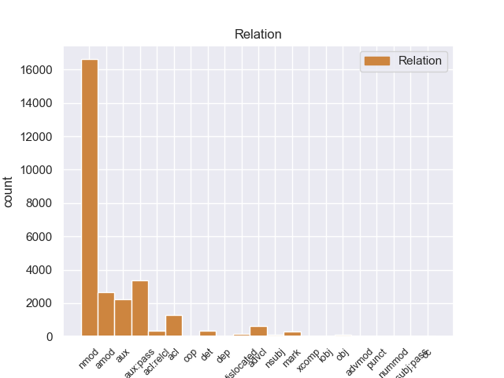
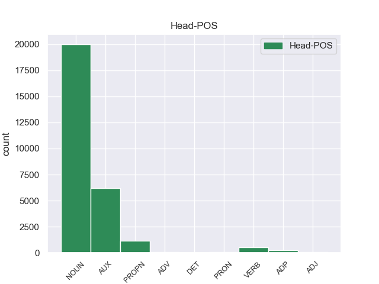
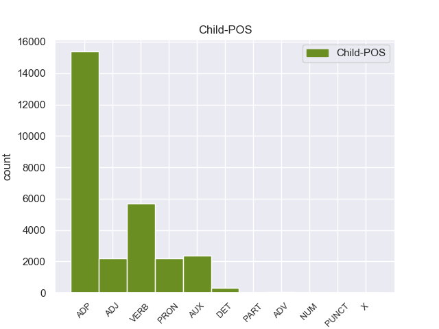

Distribution of features within this leaf



Agreement Rules sorted by frequency.
- When the dependent token is the nominal modifier(nmod) of the head token, and the dependent token is ADP.
1 उन्होंने _ _ _ _ 0 _ _ _
2 यहां _ _ _ _ 0 _ _ _
3 वेटिकन _ _ _ _ 0 _ _ _
4 दूतावास _ _ _ _ 0 _ _ _
5 में _ _ _ _ 0 _ _ _
6 एक _ _ _ _ 0 _ _ _
7 शोक _ _ _ _ 0 _ _ _
8 पुस्तिका _ _ _ _ 0 _ _ _
9 पर _ _ _ _ 0 _ _ _
10 हस्ताक्षर _ _ _ _ 0 _ _ _
11 कर _ _ _ _ 0 _ _ _
12 पोप _ _ _ _ 0 _ _ _
13 जॉन _ _ _ _ 0 _ _ _
14 पॉल _ _ _ _ 0 _ _ _
15 द्वितीय _ _ _ _ 0 _ _ _
16 के का ADP PSP AdpType=Post|Case=Acc|Gender=Masc|Number=Sing 17 nmod _ ChunkId=NP6|ChunkType=child|Translit=ke
17 निधन निधन NOUN NN Case=Acc|Gender=Masc|Number=Sing|Person=3 0 _ _ _
18 पर _ _ _ _ 0 _ _ _
19 गहरा _ _ _ _ 0 _ _ _
20 दुख _ _ _ _ 0 _ _ _
21 प्रकट _ _ _ _ 0 _ _ _
22 किया _ _ _ _ 0 _ _ _
23 । _ _ _ _ 0 _ _ _
1 मार्च _ _ _ _ 0 _ _ _
2 को _ _ _ _ 0 _ _ _
3 काफी _ _ _ _ 0 _ _ _
4 पब्लिसिटी _ _ _ _ 0 _ _ _
5 मिली _ _ _ _ 0 _ _ _
6 और _ _ _ _ 0 _ _ _
7 बापू _ _ _ _ 0 _ _ _
8 के _ _ _ _ 0 _ _ _
9 संदेश _ _ _ _ 0 _ _ _
10 को _ _ _ _ 0 _ _ _
11 जन _ _ _ _ 0 _ _ _
12 जन _ _ _ _ 0 _ _ _
13 तक _ _ _ _ 0 _ _ _
14 पहुंचाया पहुंचा VERB VM Aspect=Perf|Gender=Masc|Number=Sing|VerbForm=Part|Voice=Pass 15 aux:pass _ ChunkId=VGF2|ChunkType=head|Stype=declarative|Tam=yA|Translit=pahuṁcāyā|Vib=या_जा+या१
15 गया जा AUX VAUX Aspect=Perf|Gender=Masc|Number=Sing|VerbForm=Part 0 _ _ _
16 । _ _ _ _ 0 _ _ _
1 मैं _ _ _ _ 0 _ _ _
2 स्पष्ट _ _ _ _ 0 _ _ _
3 कर _ _ _ _ 0 _ _ _
4 देना _ _ _ _ 0 _ _ _
5 चाहता _ _ _ _ 0 _ _ _
6 हूं _ _ _ _ 0 _ _ _
7 कि _ _ _ _ 0 _ _ _
8 मेरा मैं PRON PRP Case=Acc,Gen|Gender=Masc|Number=Sing|Person=1|Poss=Yes|PronType=Prs 9 nmod _ ChunkId=NP2|ChunkType=head|Tam=kA|Translit=merā|Vib=का
9 दृष्टिकोण दृष्टिकोण NOUN NN Case=Nom|Gender=Masc|Number=Sing|Person=3 0 _ _ _
10 अलगाववादी _ _ _ _ 0 _ _ _
11 नहीं _ _ _ _ 0 _ _ _
12 है _ _ _ _ 0 _ _ _
13 । _ _ _ _ 0 _ _ _
1 उन्होंने _ _ _ _ 0 _ _ _
2 यहां _ _ _ _ 0 _ _ _
3 वेटिकन _ _ _ _ 0 _ _ _
4 दूतावास _ _ _ _ 0 _ _ _
5 में _ _ _ _ 0 _ _ _
6 एक _ _ _ _ 0 _ _ _
7 शोक _ _ _ _ 0 _ _ _
8 पुस्तिका _ _ _ _ 0 _ _ _
9 पर _ _ _ _ 0 _ _ _
10 हस्ताक्षर _ _ _ _ 0 _ _ _
11 कर _ _ _ _ 0 _ _ _
12 पोप _ _ _ _ 0 _ _ _
13 जॉन _ _ _ _ 0 _ _ _
14 पॉल _ _ _ _ 0 _ _ _
15 द्वितीय _ _ _ _ 0 _ _ _
16 के _ _ _ _ 0 _ _ _
17 निधन _ _ _ _ 0 _ _ _
18 पर _ _ _ _ 0 _ _ _
19 गहरा गहरा ADJ JJ Case=Nom|Gender=Masc|Number=Sing 20 amod _ ChunkId=NP8|ChunkType=child|Translit=gaharā
20 दुख दुख NOUN NN Case=Nom|Gender=Masc|Number=Sing|Person=3 0 _ _ _
21 प्रकट _ _ _ _ 0 _ _ _
22 किया _ _ _ _ 0 _ _ _
23 । _ _ _ _ 0 _ _ _
1 पासवान _ _ _ _ 0 _ _ _
2 ने _ _ _ _ 0 _ _ _
3 बृहस्पतिवार _ _ _ _ 0 _ _ _
4 को _ _ _ _ 0 _ _ _
5 उनके _ _ _ _ 0 _ _ _
6 कमांडो _ _ _ _ 0 _ _ _
7 वापस _ _ _ _ 0 _ _ _
8 लेने _ _ _ _ 0 _ _ _
9 के _ _ _ _ 0 _ _ _
10 राज्य _ _ _ _ 0 _ _ _
11 प्रशासन _ _ _ _ 0 _ _ _
12 के _ _ _ _ 0 _ _ _
13 प्रस्ताव _ _ _ _ 0 _ _ _
14 पर _ _ _ _ 0 _ _ _
15 कड़ी _ _ _ _ 0 _ _ _
16 नाराजगी _ _ _ _ 0 _ _ _
17 जताई _ _ _ _ 0 _ _ _
18 थी _ _ _ _ 0 _ _ _
19 और _ _ _ _ 0 _ _ _
20 चुनावों _ _ _ _ 0 _ _ _
21 में _ _ _ _ 0 _ _ _
22 डीजीपी _ _ _ _ 0 _ _ _
23 की _ _ _ _ 0 _ _ _
24 भूमिका _ _ _ _ 0 _ _ _
25 संदिग्ध _ _ _ _ 0 _ _ _
26 होने _ _ _ _ 0 _ _ _
27 का _ _ _ _ 0 _ _ _
28 आरोप _ _ _ _ 0 _ _ _
29 लगाया लगा VERB VM Aspect=Perf|Gender=Masc|Number=Sing|VerbForm=Part|Voice=Act 30 aux _ ChunkId=VGF2|ChunkType=head|Stype=declarative|Tam=yA|Translit=lagāyā|Vib=या_था
30 था था AUX VAUX Gender=Masc|Mood=Ind|Number=Sing|Tense=Past|VerbForm=Fin 0 _ _ _
31 । _ _ _ _ 0 _ _ _
1 इस _ _ _ _ 0 _ _ _
2 ट्रेन _ _ _ _ 0 _ _ _
3 में _ _ _ _ 0 _ _ _
4 पैलेस _ _ _ _ 0 _ _ _
5 ऑन _ _ _ _ 0 _ _ _
6 व्हील्स _ _ _ _ 0 _ _ _
7 की _ _ _ _ 0 _ _ _
8 तरह _ _ _ _ 0 _ _ _
9 शानो _ _ _ _ 0 _ _ _
10 - _ _ _ _ 0 _ _ _
11 शौकत _ _ _ _ 0 _ _ _
12 भरे भर VERB VM Aspect=Perf|Gender=Masc|Number=Sing|VerbForm=Part 13 acl _ ChunkId=VGNF|ChunkType=head|Tam=yA|Translit=bhare|Vib=या
13 सफ़र सफर NOUN NN Case=Acc|Gender=Masc|Number=Sing|Person=3 0 _ _ _
14 का _ _ _ _ 0 _ _ _
15 अहसास _ _ _ _ 0 _ _ _
16 तो _ _ _ _ 0 _ _ _
17 नहीं _ _ _ _ 0 _ _ _
18 होगा _ _ _ _ 0 _ _ _
19 लेकिन _ _ _ _ 0 _ _ _
20 , _ _ _ _ 0 _ _ _
21 आप _ _ _ _ 0 _ _ _
22 कम _ _ _ _ 0 _ _ _
23 खर्च _ _ _ _ 0 _ _ _
24 में _ _ _ _ 0 _ _ _
25 भारत _ _ _ _ 0 _ _ _
26 दर्शन _ _ _ _ 0 _ _ _
27 के _ _ _ _ 0 _ _ _
28 साथ _ _ _ _ 0 _ _ _
29 - _ _ _ _ 0 _ _ _
30 साथ _ _ _ _ 0 _ _ _
31 चारों _ _ _ _ 0 _ _ _
32 धाम _ _ _ _ 0 _ _ _
33 की _ _ _ _ 0 _ _ _
34 यात्रा _ _ _ _ 0 _ _ _
35 के _ _ _ _ 0 _ _ _
36 सपने _ _ _ _ 0 _ _ _
37 को _ _ _ _ 0 _ _ _
38 साकार _ _ _ _ 0 _ _ _
39 कर _ _ _ _ 0 _ _ _
40 सकते _ _ _ _ 0 _ _ _
41 हैं _ _ _ _ 0 _ _ _
42 । _ _ _ _ 0 _ _ _
1 वोल्कर _ _ _ _ 0 _ _ _
2 से _ _ _ _ 0 _ _ _
3 पूछा _ _ _ _ 0 _ _ _
4 गया जा AUX VAUX Aspect=Perf|Gender=Masc|Number=Sing|VerbForm=Part 5 aux:pass _ ChunkId=VGF|ChunkType=child|Tam=yA1|Translit=gayā|Vib=या१
5 था था AUX VAUX Gender=Masc|Mood=Ind|Number=Sing|Tense=Past|VerbForm=Fin 0 _ _ _
6 कि _ _ _ _ 0 _ _ _
7 क्या _ _ _ _ 0 _ _ _
8 कोजो _ _ _ _ 0 _ _ _
9 ने _ _ _ _ 0 _ _ _
10 अपने _ _ _ _ 0 _ _ _
11 पिता _ _ _ _ 0 _ _ _
12 के _ _ _ _ 0 _ _ _
13 संबंधों _ _ _ _ 0 _ _ _
14 का _ _ _ _ 0 _ _ _
15 इस्तेमाल _ _ _ _ 0 _ _ _
16 अपनी _ _ _ _ 0 _ _ _
17 कंपनी _ _ _ _ 0 _ _ _
18 को _ _ _ _ 0 _ _ _
19 लाभ _ _ _ _ 0 _ _ _
20 पहुंचाने _ _ _ _ 0 _ _ _
21 के _ _ _ _ 0 _ _ _
22 लिए _ _ _ _ 0 _ _ _
23 किया _ _ _ _ 0 _ _ _
24 था _ _ _ _ 0 _ _ _
25 । _ _ _ _ 0 _ _ _
1 मुशर्रफ _ _ _ _ 0 _ _ _
2 ने _ _ _ _ 0 _ _ _
3 इस _ _ _ _ 0 _ _ _
4 पर _ _ _ _ 0 _ _ _
5 सहमति _ _ _ _ 0 _ _ _
6 जताई _ _ _ _ 0 _ _ _
7 थी _ _ _ _ 0 _ _ _
8 , _ _ _ _ 0 _ _ _
9 लेकिन _ _ _ _ 0 _ _ _
10 किसी _ _ _ _ 0 _ _ _
11 भी _ _ _ _ 0 _ _ _
12 ग़ैर _ _ _ _ 0 _ _ _
13 पाकिस्तानी _ _ _ _ 0 _ _ _
14 को _ _ _ _ 0 _ _ _
15 खान _ _ _ _ 0 _ _ _
16 से _ _ _ _ 0 _ _ _
17 पूछताछ _ _ _ _ 0 _ _ _
18 की _ _ _ _ 0 _ _ _
19 अनुमति _ _ _ _ 0 _ _ _
20 देने _ _ _ _ 0 _ _ _
21 से _ _ _ _ 0 _ _ _
22 इन्कार _ _ _ _ 0 _ _ _
23 कर _ _ _ _ 0 _ _ _
24 दिया दे AUX VAUX Aspect=Perf|Gender=Masc|Number=Sing|Person=3|VerbForm=Part 0 _ _ _
25 था था AUX VAUX Gender=Masc|Mood=Ind|Number=Sing|Tense=Past|VerbForm=Fin 24 aux _ ChunkId=VGF2|ChunkType=child|Tam=WA|Translit=thā|Vib=था
26 । _ _ _ _ 0 _ _ _
1 दलाई _ _ _ _ 0 _ _ _
2 लामा _ _ _ _ 0 _ _ _
3 ने _ _ _ _ 0 _ _ _
4 भारत _ _ _ _ 0 _ _ _
5 और _ _ _ _ 0 _ _ _
6 चीन _ _ _ _ 0 _ _ _
7 के _ _ _ _ 0 _ _ _
8 रिश्ते _ _ _ _ 0 _ _ _
9 में _ _ _ _ 0 _ _ _
10 आ _ _ _ _ 0 _ _ _
11 रहे रह AUX VAUX Aspect=Perf|Gender=Masc|Number=Sing|Person=3|VerbForm=Part 12 acl _ ChunkId=VGNF|ChunkType=child|Tam=yA|Translit=rahe|Vib=या
12 सुधार सुधार NOUN NN Case=Acc|Gender=Masc|Number=Sing|Person=3 0 _ _ _
13 की _ _ _ _ 0 _ _ _
14 भी _ _ _ _ 0 _ _ _
15 प्रशंसा _ _ _ _ 0 _ _ _
16 की _ _ _ _ 0 _ _ _
17 । _ _ _ _ 0 _ _ _
1 उनका _ _ _ _ 0 _ _ _
2 कहना _ _ _ _ 0 _ _ _
3 है _ _ _ _ 0 _ _ _
4 कि _ _ _ _ 0 _ _ _
5 छोटे _ _ _ _ 0 _ _ _
6 शहरों _ _ _ _ 0 _ _ _
7 व _ _ _ _ 0 _ _ _
8 गाँवों _ _ _ _ 0 _ _ _
9 में _ _ _ _ 0 _ _ _
10 रहने _ _ _ _ 0 _ _ _
11 वाले वाला ADP PSP AdpType=Post|Case=Acc|Gender=Masc|Number=Plur 12 amod _ ChunkId=VGNN2|ChunkType=child|Translit=vāle
12 लोगों लोग NOUN NN Case=Acc|Gender=Masc|Number=Plur|Person=3 0 _ _ _
13 को _ _ _ _ 0 _ _ _
14 ट्रेन _ _ _ _ 0 _ _ _
15 के _ _ _ _ 0 _ _ _
16 जरिये _ _ _ _ 0 _ _ _
17 पर्यटन _ _ _ _ 0 _ _ _
18 की _ _ _ _ 0 _ _ _
19 कोई _ _ _ _ 0 _ _ _
20 सुविधा _ _ _ _ 0 _ _ _
21 नहीं _ _ _ _ 0 _ _ _
22 मिलती _ _ _ _ 0 _ _ _
23 । _ _ _ _ 0 _ _ _
1 पत्रिका _ _ _ _ 0 _ _ _
2 ने _ _ _ _ 0 _ _ _
3 सूत्रों _ _ _ _ 0 _ _ _
4 का _ _ _ _ 0 _ _ _
5 हवाला _ _ _ _ 0 _ _ _
6 देते _ _ _ _ 0 _ _ _
7 हुए हो AUX VAUX Aspect=Perf|Gender=Masc|Number=Sing|VerbForm=Part 8 advcl _ ChunkId=VGNF|ChunkType=child|Tam=yA|Translit=hue|Vib=या
8 कहा कह VERB VM Aspect=Perf|Gender=Masc|Number=Sing|VerbForm=Part|Voice=Act 0 _ _ _
9 कि _ _ _ _ 0 _ _ _
10 पिछले _ _ _ _ 0 _ _ _
11 वर्ष _ _ _ _ 0 _ _ _
12 दिसंबर _ _ _ _ 0 _ _ _
13 में _ _ _ _ 0 _ _ _
14 व्हाइट _ _ _ _ 0 _ _ _
15 हाउस _ _ _ _ 0 _ _ _
16 में _ _ _ _ 0 _ _ _
17 एक _ _ _ _ 0 _ _ _
18 बैठक _ _ _ _ 0 _ _ _
19 के _ _ _ _ 0 _ _ _
20 दौरान _ _ _ _ 0 _ _ _
21 राष्ट्रपति _ _ _ _ 0 _ _ _
22 जॉर्ज _ _ _ _ 0 _ _ _
23 बुश _ _ _ _ 0 _ _ _
24 ने _ _ _ _ 0 _ _ _
25 पाकिस्तानी _ _ _ _ 0 _ _ _
26 राष्ट्रपति _ _ _ _ 0 _ _ _
27 परवेज़ _ _ _ _ 0 _ _ _
28 मुशर्रफ _ _ _ _ 0 _ _ _
29 से _ _ _ _ 0 _ _ _
30 कहा _ _ _ _ 0 _ _ _
31 था _ _ _ _ 0 _ _ _
32 कि _ _ _ _ 0 _ _ _
33 उनका _ _ _ _ 0 _ _ _
34 मानना _ _ _ _ 0 _ _ _
35 है _ _ _ _ 0 _ _ _
36 कि _ _ _ _ 0 _ _ _
37 खान _ _ _ _ 0 _ _ _
38 ने _ _ _ _ 0 _ _ _
39 अपने _ _ _ _ 0 _ _ _
40 सभी _ _ _ _ 0 _ _ _
41 घृणित _ _ _ _ 0 _ _ _
42 सौदों _ _ _ _ 0 _ _ _
43 को _ _ _ _ 0 _ _ _
44 स्वीकार _ _ _ _ 0 _ _ _
45 नहीं _ _ _ _ 0 _ _ _
46 किया _ _ _ _ 0 _ _ _
47 है _ _ _ _ 0 _ _ _
48 । _ _ _ _ 0 _ _ _
1 वोल्कर _ _ _ _ 0 _ _ _
2 ने _ _ _ _ 0 _ _ _
3 कहा _ _ _ _ 0 _ _ _
4 कि _ _ _ _ 0 _ _ _
5 जांच _ _ _ _ 0 _ _ _
6 के _ _ _ _ 0 _ _ _
7 दौरान _ _ _ _ 0 _ _ _
8 किसी _ _ _ _ 0 _ _ _
9 ने _ _ _ _ 0 _ _ _
10 उन्हें _ _ _ _ 0 _ _ _
11 बताया _ _ _ _ 0 _ _ _
12 भी _ _ _ _ 0 _ _ _
13 नहीं _ _ _ _ 0 _ _ _
14 कि _ _ _ _ 0 _ _ _
15 निविदा _ _ _ _ 0 _ _ _
16 की _ _ _ _ 0 _ _ _
17 सारी सारा DET QF Case=Acc|Gender=Fem|Number=Sing 18 det _ ChunkId=NP6|ChunkType=child|Translit=sārī
18 प्रक्रिया प्रक्रिया NOUN NN Case=Acc|Gender=Fem|Number=Sing|Person=3 0 _ _ _
19 पर _ _ _ _ 0 _ _ _
20 किसी _ _ _ _ 0 _ _ _
21 ने _ _ _ _ 0 _ _ _
22 प्रभाव _ _ _ _ 0 _ _ _
23 डालने _ _ _ _ 0 _ _ _
24 की _ _ _ _ 0 _ _ _
25 कोशिश _ _ _ _ 0 _ _ _
26 की _ _ _ _ 0 _ _ _
27 या _ _ _ _ 0 _ _ _
28 इस _ _ _ _ 0 _ _ _
29 पर _ _ _ _ 0 _ _ _
30 विचार _ _ _ _ 0 _ _ _
31 भी _ _ _ _ 0 _ _ _
32 किया _ _ _ _ 0 _ _ _
33 गया _ _ _ _ 0 _ _ _
34 । _ _ _ _ 0 _ _ _
1 यह _ _ _ _ 0 _ _ _
2 कहना _ _ _ _ 0 _ _ _
3 है _ _ _ _ 0 _ _ _
4 अमेरिका अमेरिका PROPN NNP Case=Acc|Gender=Masc|Number=Sing|Person=3 0 _ _ _
5 का _ _ _ _ 0 _ _ _
6 , _ _ _ _ 0 _ _ _
7 जो _ _ _ _ 0 _ _ _
8 सऊदी _ _ _ _ 0 _ _ _
9 अरब _ _ _ _ 0 _ _ _
10 और _ _ _ _ 0 _ _ _
11 अन्य _ _ _ _ 0 _ _ _
12 अरब _ _ _ _ 0 _ _ _
13 देशों _ _ _ _ 0 _ _ _
14 को _ _ _ _ 0 _ _ _
15 परमाणु _ _ _ _ 0 _ _ _
16 तक़नीक _ _ _ _ 0 _ _ _
17 बेचने _ _ _ _ 0 _ _ _
18 में _ _ _ _ 0 _ _ _
19 खान _ _ _ _ 0 _ _ _
20 नेटवर्क _ _ _ _ 0 _ _ _
21 की _ _ _ _ 0 _ _ _
22 भूमिका _ _ _ _ 0 _ _ _
23 का _ _ _ _ 0 _ _ _
24 पता _ _ _ _ 0 _ _ _
25 लगा _ _ _ _ 0 _ _ _
26 रहा रह AUX VAUX Aspect=Perf|Gender=Masc|Number=Sing|VerbForm=Part 4 acl:relcl _ ChunkId=VGF2|ChunkType=child|Tam=yA|Translit=rahā|Vib=या
27 है _ _ _ _ 0 _ _ _
28 । _ _ _ _ 0 _ _ _
1 खान _ _ _ _ 0 _ _ _
2 के _ _ _ _ 0 _ _ _
3 संदिग्ध _ _ _ _ 0 _ _ _
4 परमाणु _ _ _ _ 0 _ _ _
5 ग्राहकों _ _ _ _ 0 _ _ _
6 की _ _ _ _ 0 _ _ _
7 सूची _ _ _ _ 0 _ _ _
8 को _ _ _ _ 0 _ _ _
9 आश्चर्य _ _ _ _ 0 _ _ _
10 में _ _ _ _ 0 _ _ _
11 डाल _ _ _ _ 0 _ _ _
12 देने _ _ _ _ 0 _ _ _
13 वाली _ _ _ _ 0 _ _ _
14 बताते _ _ _ _ 0 _ _ _
15 हुए _ _ _ _ 0 _ _ _
16 टाईम _ _ _ _ 0 _ _ _
17 पत्रिका _ _ _ _ 0 _ _ _
18 के _ _ _ _ 0 _ _ _
19 हाल _ _ _ _ 0 _ _ _
20 के _ _ _ _ 0 _ _ _
21 अंक _ _ _ _ 0 _ _ _
22 में _ _ _ _ 0 _ _ _
23 कहा _ _ _ _ 0 _ _ _
24 गया _ _ _ _ 0 _ _ _
25 कि _ _ _ _ 0 _ _ _
26 पाकिस्तान _ _ _ _ 0 _ _ _
27 की _ _ _ _ 0 _ _ _
28 परमाणु _ _ _ _ 0 _ _ _
29 शोध _ _ _ _ 0 _ _ _
30 प्रयोगशाला _ _ _ _ 0 _ _ _
31 का _ _ _ _ 0 _ _ _
32 प्रमुख _ _ _ _ 0 _ _ _
33 होने हो VERB VM Case=Acc|Gender=Masc|VerbForm=Inf 35 mark _ ChunkId=VGNN2|ChunkType=head|Tam=nA|Translit=hone|Vib=ना_के_नाते
34 के _ _ _ _ 0 _ _ _
35 नाते नाते ADP PSP Case=Acc|Gender=Masc 0 _ _ _
36 खान _ _ _ _ 0 _ _ _
37 ने _ _ _ _ 0 _ _ _
38 एक _ _ _ _ 0 _ _ _
39 दशक _ _ _ _ 0 _ _ _
40 से _ _ _ _ 0 _ _ _
41 भी _ _ _ _ 0 _ _ _
42 अधिक _ _ _ _ 0 _ _ _
43 समय _ _ _ _ 0 _ _ _
44 में _ _ _ _ 0 _ _ _
45 पूरे _ _ _ _ 0 _ _ _
46 विश्व _ _ _ _ 0 _ _ _
47 की _ _ _ _ 0 _ _ _
48 यात्रा _ _ _ _ 0 _ _ _
49 की _ _ _ _ 0 _ _ _
50 । _ _ _ _ 0 _ _ _
1 खान _ _ _ _ 0 _ _ _
2 के _ _ _ _ 0 _ _ _
3 संदिग्ध _ _ _ _ 0 _ _ _
4 परमाणु _ _ _ _ 0 _ _ _
5 ग्राहकों _ _ _ _ 0 _ _ _
6 की _ _ _ _ 0 _ _ _
7 सूची _ _ _ _ 0 _ _ _
8 को _ _ _ _ 0 _ _ _
9 आश्चर्य _ _ _ _ 0 _ _ _
10 में _ _ _ _ 0 _ _ _
11 डाल _ _ _ _ 0 _ _ _
12 देने _ _ _ _ 0 _ _ _
13 वाली _ _ _ _ 0 _ _ _
14 बताते _ _ _ _ 0 _ _ _
15 हुए _ _ _ _ 0 _ _ _
16 टाईम _ _ _ _ 0 _ _ _
17 पत्रिका _ _ _ _ 0 _ _ _
18 के _ _ _ _ 0 _ _ _
19 हाल _ _ _ _ 0 _ _ _
20 के _ _ _ _ 0 _ _ _
21 अंक _ _ _ _ 0 _ _ _
22 में _ _ _ _ 0 _ _ _
23 कहा _ _ _ _ 0 _ _ _
24 गया _ _ _ _ 0 _ _ _
25 कि _ _ _ _ 0 _ _ _
26 पाकिस्तान _ _ _ _ 0 _ _ _
27 की _ _ _ _ 0 _ _ _
28 परमाणु _ _ _ _ 0 _ _ _
29 शोध _ _ _ _ 0 _ _ _
30 प्रयोगशाला _ _ _ _ 0 _ _ _
31 का _ _ _ _ 0 _ _ _
32 प्रमुख _ _ _ _ 0 _ _ _
33 होने _ _ _ _ 0 _ _ _
34 के के ADP PSP AdpType=Post|Case=Acc|Gender=Masc 0 _ _ _
35 नाते नाते ADP PSP Case=Acc|Gender=Masc 34 mark _ ChunkId=VGNN2|ChunkType=child|Translit=nāte
36 खान _ _ _ _ 0 _ _ _
37 ने _ _ _ _ 0 _ _ _
38 एक _ _ _ _ 0 _ _ _
39 दशक _ _ _ _ 0 _ _ _
40 से _ _ _ _ 0 _ _ _
41 भी _ _ _ _ 0 _ _ _
42 अधिक _ _ _ _ 0 _ _ _
43 समय _ _ _ _ 0 _ _ _
44 में _ _ _ _ 0 _ _ _
45 पूरे _ _ _ _ 0 _ _ _
46 विश्व _ _ _ _ 0 _ _ _
47 की _ _ _ _ 0 _ _ _
48 यात्रा _ _ _ _ 0 _ _ _
49 की _ _ _ _ 0 _ _ _
50 । _ _ _ _ 0 _ _ _
1 इराक़ _ _ _ _ 0 _ _ _
2 में _ _ _ _ 0 _ _ _
3 सामूहिक _ _ _ _ 0 _ _ _
4 विनाश _ _ _ _ 0 _ _ _
5 के _ _ _ _ 0 _ _ _
6 हथियारों _ _ _ _ 0 _ _ _
7 का _ _ _ _ 0 _ _ _
8 हौवा _ _ _ _ 0 _ _ _
9 खड़ा _ _ _ _ 0 _ _ _
10 कर खड़ा VERB VM Gender=Masc|Number=Sing|Person=3|VerbForm=Conv 20 advcl _ ChunkId=VGNF|ChunkType=head|Tam=kara|Translit=kara|Vib=कर
11 बिना _ _ _ _ 0 _ _ _
12 पूरी _ _ _ _ 0 _ _ _
13 जानकारी _ _ _ _ 0 _ _ _
14 के _ _ _ _ 0 _ _ _
15 अमेरिका _ _ _ _ 0 _ _ _
16 ने _ _ _ _ 0 _ _ _
17 उस _ _ _ _ 0 _ _ _
18 पर _ _ _ _ 0 _ _ _
19 कहर _ _ _ _ 0 _ _ _
20 बरपाया बरपा VERB VM Aspect=Perf|Gender=Masc|Number=Sing|Person=3|VerbForm=Part|Voice=Act 0 _ _ _
21 । _ _ _ _ 0 _ _ _
1 कैग _ _ _ _ 0 _ _ _
2 ने _ _ _ _ 0 _ _ _
3 शुक्रवार _ _ _ _ 0 _ _ _
4 को _ _ _ _ 0 _ _ _
5 संसद _ _ _ _ 0 _ _ _
6 में _ _ _ _ 0 _ _ _
7 पेश _ _ _ _ 0 _ _ _
8 अपनी _ _ _ _ 0 _ _ _
9 रिपोर्ट _ _ _ _ 0 _ _ _
10 में _ _ _ _ 0 _ _ _
11 कहा _ _ _ _ 0 _ _ _
12 कि _ _ _ _ 0 _ _ _
13 मुंबई _ _ _ _ 0 _ _ _
14 के _ _ _ _ 0 _ _ _
15 जुहू _ _ _ _ 0 _ _ _
16 सेंटॉर _ _ _ _ 0 _ _ _
17 और _ _ _ _ 0 _ _ _
18 एअरपोर्ट _ _ _ _ 0 _ _ _
19 सेंटॉर _ _ _ _ 0 _ _ _
20 होटलों _ _ _ _ 0 _ _ _
21 की _ _ _ _ 0 _ _ _
22 बिक्री _ _ _ _ 0 _ _ _
23 एकमात्र _ _ _ _ 0 _ _ _
24 बोली _ _ _ _ 0 _ _ _
25 के _ _ _ _ 0 _ _ _
26 आधार _ _ _ _ 0 _ _ _
27 पर _ _ _ _ 0 _ _ _
28 की _ _ _ _ 0 _ _ _
29 गई _ _ _ _ 0 _ _ _
30 थी _ _ _ _ 0 _ _ _
31 , _ _ _ _ 0 _ _ _
32 जबकि _ _ _ _ 0 _ _ _
33 इसे _ _ _ _ 0 _ _ _
34 कंपटीटिव _ _ _ _ 0 _ _ _
35 बिडिंग _ _ _ _ 0 _ _ _
36 ( _ _ _ _ 0 _ _ _
37 प्रतिस्पर्धात्मक _ _ _ _ 0 _ _ _
38 बोली _ _ _ _ 0 _ _ _
39 ) _ _ _ _ 0 _ _ _
40 के का ADP PSP AdpType=Post|Case=Acc|Gender=Masc|Number=Sing 41 dislocated _ ChunkId=FRAGP|ChunkType=head|Translit=ke
41 आधार आधार NOUN NN Case=Acc|Gender=Masc|Number=Sing|Person=3 0 _ _ _
42 पर _ _ _ _ 0 _ _ _
43 किया _ _ _ _ 0 _ _ _
44 जाना _ _ _ _ 0 _ _ _
45 चाहिए _ _ _ _ 0 _ _ _
46 था _ _ _ _ 0 _ _ _
47 । _ _ _ _ 0 _ _ _
1 उन्होंने _ _ _ _ 0 _ _ _
2 कहा _ _ _ _ 0 _ _ _
3 कि _ _ _ _ 0 _ _ _
4 गुरुद्वारे _ _ _ _ 0 _ _ _
5 की _ _ _ _ 0 _ _ _
6 मरम्मत _ _ _ _ 0 _ _ _
7 का _ _ _ _ 0 _ _ _
8 काम काम NOUN NN Case=Nom|Gender=Masc|Number=Sing|Person=3 0 _ _ _
9 अमृतसर _ _ _ _ 0 _ _ _
10 के _ _ _ _ 0 _ _ _
11 बाबा _ _ _ _ 0 _ _ _
12 जगतार _ _ _ _ 0 _ _ _
13 सिंह _ _ _ _ 0 _ _ _
14 की _ _ _ _ 0 _ _ _
15 देख _ _ _ _ 0 _ _ _
16 - _ _ _ _ 0 _ _ _
17 रेख _ _ _ _ 0 _ _ _
18 में _ _ _ _ 0 _ _ _
19 होगा _ _ _ _ 0 _ _ _
20 जिसमें _ _ _ _ 0 _ _ _
21 पाकिस्तान _ _ _ _ 0 _ _ _
22 के _ _ _ _ 0 _ _ _
23 वास्तुकार _ _ _ _ 0 _ _ _
24 शामिल _ _ _ _ 0 _ _ _
25 रहेंगे रह VERB VM Gender=Masc|Mood=Ind|Number=Plur|Person=1|Tense=Fut|VerbForm=Fin|Voice=Act 8 acl:relcl _ ChunkId=VGF3|ChunkType=head|Stype=declarative|Tam=gA|Translit=raheṁge|Vib=गा
26 । _ _ _ _ 0 _ _ _
1 हमें _ _ _ _ 0 _ _ _
2 एक एक PRON PRPC Case=Nom|Gender=Masc|Number=Sing|Person=3|PronType=Prs 3 nsubj _ ChunkId=NP2|ChunkType=child|Tam=0|Translit=eka|Vib=0
3 दूसरे दूसरा PRON PRP Case=Acc|Gender=Masc|Number=Sing|Person=3|PronType=Prs 0 _ _ _
4 का _ _ _ _ 0 _ _ _
5 भरोसा _ _ _ _ 0 _ _ _
6 जीतने _ _ _ _ 0 _ _ _
7 के _ _ _ _ 0 _ _ _
8 प्रयास _ _ _ _ 0 _ _ _
9 करने _ _ _ _ 0 _ _ _
10 चाहिए _ _ _ _ 0 _ _ _
11 । _ _ _ _ 0 _ _ _
1 इस _ _ _ _ 0 _ _ _
2 बीच _ _ _ _ 0 _ _ _
3 बारिश _ _ _ _ 0 _ _ _
4 नहीं _ _ _ _ 0 _ _ _
5 होने _ _ _ _ 0 _ _ _
6 के के ADP PSP AdpType=Post|Case=Acc|Gender=Masc 16 advcl _ ChunkId=VGNN|ChunkType=child|Translit=ke
7 कारण _ _ _ _ 0 _ _ _
8 गर्मी _ _ _ _ 0 _ _ _
9 ने _ _ _ _ 0 _ _ _
10 फिर _ _ _ _ 0 _ _ _
11 अपना _ _ _ _ 0 _ _ _
12 कहर _ _ _ _ 0 _ _ _
13 बरपाना _ _ _ _ 0 _ _ _
14 शुरू _ _ _ _ 0 _ _ _
15 कर _ _ _ _ 0 _ _ _
16 दिया दे AUX VAUX Aspect=Perf|Gender=Masc|Number=Sing|VerbForm=Part 0 _ _ _
17 तथा _ _ _ _ 0 _ _ _
18 कई _ _ _ _ 0 _ _ _
19 स्थानों _ _ _ _ 0 _ _ _
20 पर _ _ _ _ 0 _ _ _
21 तापमान _ _ _ _ 0 _ _ _
22 ४० _ _ _ _ 0 _ _ _
23 डिग्री _ _ _ _ 0 _ _ _
24 सेल्सियस _ _ _ _ 0 _ _ _
25 से _ _ _ _ 0 _ _ _
26 ऊपर _ _ _ _ 0 _ _ _
27 पहुंच _ _ _ _ 0 _ _ _
28 गया _ _ _ _ 0 _ _ _
29 है _ _ _ _ 0 _ _ _
30 । _ _ _ _ 0 _ _ _
1 अमेरिकी _ _ _ _ 0 _ _ _
2 नेवी _ _ _ _ 0 _ _ _
3 के _ _ _ _ 0 _ _ _
4 कमांडर _ _ _ _ 0 _ _ _
5 जेफ _ _ _ _ 0 _ _ _
6 बेंडर _ _ _ _ 0 _ _ _
7 ने _ _ _ _ 0 _ _ _
8 अपने _ _ _ _ 0 _ _ _
9 लिखित _ _ _ _ 0 _ _ _
10 जवाब _ _ _ _ 0 _ _ _
11 में _ _ _ _ 0 _ _ _
12 कहा _ _ _ _ 0 _ _ _
13 है _ _ _ _ 0 _ _ _
14 कि _ _ _ _ 0 _ _ _
15 इन _ _ _ _ 0 _ _ _
16 तस्वीरों _ _ _ _ 0 _ _ _
17 से _ _ _ _ 0 _ _ _
18 इराकी _ _ _ _ 0 _ _ _
19 कैदियों _ _ _ _ 0 _ _ _
20 और _ _ _ _ 0 _ _ _
21 बंधकों _ _ _ _ 0 _ _ _
22 के _ _ _ _ 0 _ _ _
23 साथ साथ ADP NST AdpType=Post|Case=Nom|Gender=Masc|Number=Sing|Person=3 24 nsubj _ AltTag=ADP-NOUN|ChunkId=NP8|ChunkType=child|Translit=sātha
24 हुए हो VERB VM Aspect=Perf|Gender=Masc|Number=Sing|VerbForm=Part 0 _ _ _
25 बरताव _ _ _ _ 0 _ _ _
26 से _ _ _ _ 0 _ _ _
27 जुड़े _ _ _ _ 0 _ _ _
28 अनेक _ _ _ _ 0 _ _ _
29 सवाल _ _ _ _ 0 _ _ _
30 पैदा _ _ _ _ 0 _ _ _
31 होते _ _ _ _ 0 _ _ _
32 हैं _ _ _ _ 0 _ _ _
33 । _ _ _ _ 0 _ _ _
1 इस _ _ _ _ 0 _ _ _
2 काम _ _ _ _ 0 _ _ _
3 पर _ _ _ _ 0 _ _ _
4 जितनी _ _ _ _ 0 _ _ _
5 रक़म _ _ _ _ 0 _ _ _
6 खर्च _ _ _ _ 0 _ _ _
7 होगी _ _ _ _ 0 _ _ _
8 , _ _ _ _ 0 _ _ _
9 उसका _ _ _ _ 0 _ _ _
10 ८५ _ _ _ _ 0 _ _ _
11 प्रतिशत _ _ _ _ 0 _ _ _
12 भारत _ _ _ _ 0 _ _ _
13 सरकार _ _ _ _ 0 _ _ _
14 जापान _ _ _ _ 0 _ _ _
15 से _ _ _ _ 0 _ _ _
16 लिए _ _ _ _ 0 _ _ _
17 गए जा AUX VAUX Aspect=Perf|Gender=Masc|Number=Sing|VerbForm=Part 18 amod _ ChunkId=VGNF|ChunkType=child|Tam=yA1|Translit=gae|Vib=या१
18 कर्ज कर्ज NOUN NN Case=Acc|Gender=Masc|Number=Sing|Person=3 0 _ _ _
19 से _ _ _ _ 0 _ _ _
20 अनुदान _ _ _ _ 0 _ _ _
21 के _ _ _ _ 0 _ _ _
22 रूप _ _ _ _ 0 _ _ _
23 में _ _ _ _ 0 _ _ _
24 राज्य _ _ _ _ 0 _ _ _
25 सरकार _ _ _ _ 0 _ _ _
26 को _ _ _ _ 0 _ _ _
27 देगी _ _ _ _ 0 _ _ _
28 जबकि _ _ _ _ 0 _ _ _
29 शेष _ _ _ _ 0 _ _ _
30 १५ _ _ _ _ 0 _ _ _
31 प्रतिशत _ _ _ _ 0 _ _ _
32 अंश _ _ _ _ 0 _ _ _
33 प्रदेश _ _ _ _ 0 _ _ _
34 सरकार _ _ _ _ 0 _ _ _
35 को _ _ _ _ 0 _ _ _
36 देय _ _ _ _ 0 _ _ _
37 होगा _ _ _ _ 0 _ _ _
38 । _ _ _ _ 0 _ _ _
1 समझौते _ _ _ _ 0 _ _ _
2 के _ _ _ _ 0 _ _ _
3 मुताबिक _ _ _ _ 0 _ _ _
4 कंपनी _ _ _ _ 0 _ _ _
5 के _ _ _ _ 0 _ _ _
6 चार _ _ _ _ 0 _ _ _
7 बरखास्त _ _ _ _ 0 _ _ _
8 यूनियन _ _ _ _ 0 _ _ _
9 नेता _ _ _ _ 0 _ _ _
10 सहित _ _ _ _ 0 _ _ _
11 आंदोलन _ _ _ _ 0 _ _ _
12 में _ _ _ _ 0 _ _ _
13 भाग _ _ _ _ 0 _ _ _
14 लेने _ _ _ _ 0 _ _ _
15 वाले वाला ADP PSP AdpType=Post|Case=Acc|Gender=Masc|Number=Plur 17 acl _ ChunkId=VGNN|ChunkType=child|Translit=vāle
16 सभी _ _ _ _ 0 _ _ _
17 श्रमिकों श्रमिक NOUN NN Case=Acc|Gender=Masc|Number=Plur|Person=3 0 _ _ _
18 को _ _ _ _ 0 _ _ _
19 शनिवार _ _ _ _ 0 _ _ _
20 से _ _ _ _ 0 _ _ _
21 काम _ _ _ _ 0 _ _ _
22 पर _ _ _ _ 0 _ _ _
23 ले _ _ _ _ 0 _ _ _
24 लिया _ _ _ _ 0 _ _ _
25 गया _ _ _ _ 0 _ _ _
26 । _ _ _ _ 0 _ _ _
1 पाठ्यक्रम _ _ _ _ 0 _ _ _
2 में _ _ _ _ 0 _ _ _
3 बदलाव _ _ _ _ 0 _ _ _
4 के _ _ _ _ 0 _ _ _
5 बहाने _ _ _ _ 0 _ _ _
6 हुए हो VERB VM Aspect=Perf|Gender=Masc|Number=Sing|VerbForm=Part 8 amod _ ChunkId=VGNF|ChunkType=head|Tam=yA|Translit=hue|Vib=या
7 कथित _ _ _ _ 0 _ _ _
8 भगवाकरण भगवाकरण NOUN NN Case=Acc|Gender=Masc|Number=Sing|Person=3 0 _ _ _
9 को _ _ _ _ 0 _ _ _
10 दूर _ _ _ _ 0 _ _ _
11 करने _ _ _ _ 0 _ _ _
12 के _ _ _ _ 0 _ _ _
13 बारे _ _ _ _ 0 _ _ _
14 में _ _ _ _ 0 _ _ _
15 वह _ _ _ _ 0 _ _ _
16 अगले _ _ _ _ 0 _ _ _
17 आठ _ _ _ _ 0 _ _ _
18 - _ _ _ _ 0 _ _ _
19 दस _ _ _ _ 0 _ _ _
20 दिनों _ _ _ _ 0 _ _ _
21 में _ _ _ _ 0 _ _ _
22 ही _ _ _ _ 0 _ _ _
23 कोई _ _ _ _ 0 _ _ _
24 निर्णय _ _ _ _ 0 _ _ _
25 ले _ _ _ _ 0 _ _ _
26 लेंगे _ _ _ _ 0 _ _ _
27 । _ _ _ _ 0 _ _ _
1 पार्टी _ _ _ _ 0 _ _ _
2 की _ _ _ _ 0 _ _ _
3 रजत _ _ _ _ 0 _ _ _
4 जयंती _ _ _ _ 0 _ _ _
5 मनाने _ _ _ _ 0 _ _ _
6 के _ _ _ _ 0 _ _ _
7 प्रस्ताव _ _ _ _ 0 _ _ _
8 में _ _ _ _ 0 _ _ _
9 इस _ _ _ _ 0 _ _ _
10 बात _ _ _ _ 0 _ _ _
11 का _ _ _ _ 0 _ _ _
12 जिक्र _ _ _ _ 0 _ _ _
13 है _ _ _ _ 0 _ _ _
14 कि _ _ _ _ 0 _ _ _
15 देश _ _ _ _ 0 _ _ _
16 की _ _ _ _ 0 _ _ _
17 राजनीति _ _ _ _ 0 _ _ _
18 में _ _ _ _ 0 _ _ _
19 भाजपा _ _ _ _ 0 _ _ _
20 एक _ _ _ _ 0 _ _ _
21 विशिष्ट _ _ _ _ 0 _ _ _
22 वैचारिक _ _ _ _ 0 _ _ _
23 ध्रुव _ _ _ _ 0 _ _ _
24 के _ _ _ _ 0 _ _ _
25 रूप _ _ _ _ 0 _ _ _
26 में _ _ _ _ 0 _ _ _
27 खड़ी खड़ा ADJ JJ Gender=Fem|Number=Sing 28 xcomp _ ChunkId=JJP|ChunkType=head|Translit=khaṛī
28 रही रह VERB VM Aspect=Perf|Gender=Fem|Number=Sing|VerbForm=Part|Voice=Act 0 _ _ _
29 । _ _ _ _ 0 _ _ _
1 पाठ्यक्रम _ _ _ _ 0 _ _ _
2 में _ _ _ _ 0 _ _ _
3 बदलाव _ _ _ _ 0 _ _ _
4 के के ADP PSP AdpType=Post|Case=Acc|Gender=Masc 6 obj _ ChunkId=NP2|ChunkType=child|Translit=ke
5 बहाने _ _ _ _ 0 _ _ _
6 हुए हो VERB VM Aspect=Perf|Gender=Masc|Number=Sing|VerbForm=Part 0 _ _ _
7 कथित _ _ _ _ 0 _ _ _
8 भगवाकरण _ _ _ _ 0 _ _ _
9 को _ _ _ _ 0 _ _ _
10 दूर _ _ _ _ 0 _ _ _
11 करने _ _ _ _ 0 _ _ _
12 के _ _ _ _ 0 _ _ _
13 बारे _ _ _ _ 0 _ _ _
14 में _ _ _ _ 0 _ _ _
15 वह _ _ _ _ 0 _ _ _
16 अगले _ _ _ _ 0 _ _ _
17 आठ _ _ _ _ 0 _ _ _
18 - _ _ _ _ 0 _ _ _
19 दस _ _ _ _ 0 _ _ _
20 दिनों _ _ _ _ 0 _ _ _
21 में _ _ _ _ 0 _ _ _
22 ही _ _ _ _ 0 _ _ _
23 कोई _ _ _ _ 0 _ _ _
24 निर्णय _ _ _ _ 0 _ _ _
25 ले _ _ _ _ 0 _ _ _
26 लेंगे _ _ _ _ 0 _ _ _
27 । _ _ _ _ 0 _ _ _
1 उन्होंने _ _ _ _ 0 _ _ _
2 कहा कह VERB VM Aspect=Perf|Gender=Masc|Number=Sing|VerbForm=Part|Voice=Act 0 _ _ _
3 , _ _ _ _ 0 _ _ _
4 ' _ _ _ _ 0 _ _ _
5 इससे _ _ _ _ 0 _ _ _
6 पहले _ _ _ _ 0 _ _ _
7 स्टील _ _ _ _ 0 _ _ _
8 उद्योग _ _ _ _ 0 _ _ _
9 ने _ _ _ _ 0 _ _ _
10 उत्पादन _ _ _ _ 0 _ _ _
11 में _ _ _ _ 0 _ _ _
12 कटौती _ _ _ _ 0 _ _ _
13 के _ _ _ _ 0 _ _ _
14 बारे _ _ _ _ 0 _ _ _
15 में _ _ _ _ 0 _ _ _
16 कभी _ _ _ _ 0 _ _ _
17 नहीं _ _ _ _ 0 _ _ _
18 सोचा _ _ _ _ 0 _ _ _
19 था था AUX VAUX Gender=Masc|Mood=Ind|Number=Sing|Tense=Past|VerbForm=Fin 2 obj _ ChunkId=VGF2|ChunkType=child|SpaceAfter=No|Tam=WA|Translit=thā|Vib=था
20 , _ _ _ _ 0 _ _ _
21 लेकिन _ _ _ _ 0 _ _ _
22 उसे _ _ _ _ 0 _ _ _
23 कटौती _ _ _ _ 0 _ _ _
24 करनी _ _ _ _ 0 _ _ _
25 पड़ी _ _ _ _ 0 _ _ _
26 । _ _ _ _ 0 _ _ _
1 किसानों _ _ _ _ 0 _ _ _
2 ने _ _ _ _ 0 _ _ _
3 भी _ _ _ _ 0 _ _ _
4 लगे _ _ _ _ 0 _ _ _
5 हाथों हाथ ADV RB Case=Nom|Gender=Masc|Number=Plur|Person=3 8 advmod _ ChunkId=RBP|ChunkType=head|Tam=0|Translit=hāthoṁ|Vib=0
6 उन्हें _ _ _ _ 0 _ _ _
7 भरोसा _ _ _ _ 0 _ _ _
8 दिलाया दिला VERB VM Aspect=Perf|Gender=Masc|Number=Sing|VerbForm=Part|Voice=Act 0 _ _ _
9 कि _ _ _ _ 0 _ _ _
10 हम _ _ _ _ 0 _ _ _
11 भी _ _ _ _ 0 _ _ _
12 इस _ _ _ _ 0 _ _ _
13 बार _ _ _ _ 0 _ _ _
14 आपकी _ _ _ _ 0 _ _ _
15 सरकार _ _ _ _ 0 _ _ _
16 बनाने _ _ _ _ 0 _ _ _
17 का _ _ _ _ 0 _ _ _
18 ' _ _ _ _ 0 _ _ _
19 जुगाड़ _ _ _ _ 0 _ _ _
20 ' _ _ _ _ 0 _ _ _
21 करेंगे _ _ _ _ 0 _ _ _
22 । _ _ _ _ 0 _ _ _
1 वी. _ _ _ _ 0 _ _ _
2 के. _ _ _ _ 0 _ _ _
3 शर्मा _ _ _ _ 0 _ _ _
4 को _ _ _ _ 0 _ _ _
5 दिल्ली _ _ _ _ 0 _ _ _
6 , _ _ _ _ 0 _ _ _
7 लुधियाना _ _ _ _ 0 _ _ _
8 , _ _ _ _ 0 _ _ _
9 कोलकाता _ _ _ _ 0 _ _ _
10 व _ _ _ _ 0 _ _ _
11 मुंबई _ _ _ _ 0 _ _ _
12 पुलिस _ _ _ _ 0 _ _ _
13 समेत _ _ _ _ 0 _ _ _
14 करीब _ _ _ _ 0 _ _ _
15 आधा आधा NUM QC Case=Acc|Gender=Masc|Number=Sing|NumType=Card 16 nummod _ ChunkId=NP6|ChunkType=child|Translit=ādhā
16 दर्जन दर्जन NOUN NN Case=Nom|Gender=Masc|Number=Sing|Person=3 0 _ _ _
17 राज्यों _ _ _ _ 0 _ _ _
18 की _ _ _ _ 0 _ _ _
19 पुलिस _ _ _ _ 0 _ _ _
20 ढूंढ़ _ _ _ _ 0 _ _ _
21 रही _ _ _ _ 0 _ _ _
22 थी _ _ _ _ 0 _ _ _
23 । _ _ _ _ 0 _ _ _
1 डॉक्टरों _ _ _ _ 0 _ _ _
2 की _ _ _ _ 0 _ _ _
3 थोड़ी थोड़ा DET QF Case=Acc|Gender=Fem|Number=Sing 0 _ _ _
4 सी सा PART RP Case=Acc|Gender=Fem 3 dep _ ChunkId=NP2|ChunkType=child|Translit=sī
5 लापरवाही _ _ _ _ 0 _ _ _
6 से _ _ _ _ 0 _ _ _
7 मरीज _ _ _ _ 0 _ _ _
8 की _ _ _ _ 0 _ _ _
9 जान _ _ _ _ 0 _ _ _
10 जा _ _ _ _ 0 _ _ _
11 सकती _ _ _ _ 0 _ _ _
12 है _ _ _ _ 0 _ _ _
13 । _ _ _ _ 0 _ _ _
1 अगले _ _ _ _ 0 _ _ _
2 स्टेशन _ _ _ _ 0 _ _ _
3 पर _ _ _ _ 0 _ _ _
4 गाड़ी _ _ _ _ 0 _ _ _
5 के _ _ _ _ 0 _ _ _
6 रुकने _ _ _ _ 0 _ _ _
7 के _ _ _ _ 0 _ _ _
8 बाद _ _ _ _ 0 _ _ _
9 करीब _ _ _ _ 0 _ _ _
10 २०० _ _ _ _ 0 _ _ _
11 लोग _ _ _ _ 0 _ _ _
12 पहुंच _ _ _ _ 0 _ _ _
13 गए _ _ _ _ 0 _ _ _
14 और _ _ _ _ 0 _ _ _
15 हरियाणा _ _ _ _ 0 _ _ _
16 पुलिस _ _ _ _ 0 _ _ _
17 के _ _ _ _ 0 _ _ _
18 जवानों _ _ _ _ 0 _ _ _
19 पर _ _ _ _ 0 _ _ _
20 पथराव _ _ _ _ 0 _ _ _
21 और _ _ _ _ 0 _ _ _
22 गोलियां _ _ _ _ 0 _ _ _
23 चलानी चला VERB VM Case=Nom|Gender=Fem|VerbForm=Inf 26 obj _ ChunkId=VGNN2|ChunkType=head|Tam=nA|Translit=calānī|Vib=ना
24 शुरू _ _ _ _ 0 _ _ _
25 कर _ _ _ _ 0 _ _ _
26 दी दे AUX VAUX Aspect=Perf|Gender=Fem|Number=Plur|VerbForm=Part 0 _ _ _
27 । _ _ _ _ 0 _ _ _
1 लालू _ _ _ _ 0 _ _ _
2 ने _ _ _ _ 0 _ _ _
3 कहा _ _ _ _ 0 _ _ _
4 कि _ _ _ _ 0 _ _ _
5 मिथिलांचल _ _ _ _ 0 _ _ _
6 के _ _ _ _ 0 _ _ _
7 लोगों _ _ _ _ 0 _ _ _
8 को _ _ _ _ 0 _ _ _
9 गुमराह _ _ _ _ 0 _ _ _
10 करके _ _ _ _ 0 _ _ _
11 वोट _ _ _ _ 0 _ _ _
12 जुटाने _ _ _ _ 0 _ _ _
13 के _ _ _ _ 0 _ _ _
14 लिए _ _ _ _ 0 _ _ _
15 ऐसा ऐसा PRON PRP Case=Nom|Gender=Masc|Number=Sing|PronType=Prs 18 obj _ ChunkId=NP5|ChunkType=head|Tam=0|Translit=aisā|Vib=0
16 किया _ _ _ _ 0 _ _ _
17 गया _ _ _ _ 0 _ _ _
18 था था AUX VAUX Gender=Masc|Mood=Ind|Number=Sing|Tense=Past|VerbForm=Fin 0 _ _ _
19 । _ _ _ _ 0 _ _ _
1 उन्होंने _ _ _ _ 0 _ _ _
2 आरएसएस _ _ _ _ 0 _ _ _
3 कार्य _ _ _ _ 0 _ _ _
4 - _ _ _ _ 0 _ _ _
5 कर्ताओं _ _ _ _ 0 _ _ _
6 को _ _ _ _ 0 _ _ _
7 उन _ _ _ _ 0 _ _ _
8 ' _ _ _ _ 0 _ _ _
9 वोट वोट ADJ JJC Case=Nom|Gender=Masc|Number=Sing|Person=3 11 punct _ ChunkId=NP3|ChunkType=child|Tam=0|Translit=voṭa|Vib=0
10 - _ _ _ _ 0 _ _ _
11 भूखे भूखा ADJ JJ Case=Acc|Gender=Masc|Number=Plur 0 _ _ _
12 ' _ _ _ _ 0 _ _ _
13 नेताओं _ _ _ _ 0 _ _ _
14 से _ _ _ _ 0 _ _ _
15 चौकस _ _ _ _ 0 _ _ _
16 रहने _ _ _ _ 0 _ _ _
17 का _ _ _ _ 0 _ _ _
18 उपदेश _ _ _ _ 0 _ _ _
19 दिया _ _ _ _ 0 _ _ _
20 , _ _ _ _ 0 _ _ _
21 जो _ _ _ _ 0 _ _ _
22 पूरे _ _ _ _ 0 _ _ _
23 देश _ _ _ _ 0 _ _ _
24 को _ _ _ _ 0 _ _ _
25 कुछ _ _ _ _ 0 _ _ _
26 नहीं _ _ _ _ 0 _ _ _
27 समझते _ _ _ _ 0 _ _ _
28 हैं _ _ _ _ 0 _ _ _
29 । _ _ _ _ 0 _ _ _
1 अंतर्राष्ट्रीय _ _ _ _ 0 _ _ _
2 कुल्लू _ _ _ _ 0 _ _ _
3 दशहरे _ _ _ _ 0 _ _ _
4 में _ _ _ _ 0 _ _ _
5 आए _ _ _ _ 0 _ _ _
6 सैलानियों _ _ _ _ 0 _ _ _
7 को _ _ _ _ 0 _ _ _
8 भी _ _ _ _ 0 _ _ _
9 देसी _ _ _ _ 0 _ _ _
10 तकनीक _ _ _ _ 0 _ _ _
11 पर _ _ _ _ 0 _ _ _
12 आधारित _ _ _ _ 0 _ _ _
13 ये _ _ _ _ 0 _ _ _
14 उपकरण _ _ _ _ 0 _ _ _
15 खासा खासा ADJ JJ Gender=Masc|Number=Sing 17 advmod _ ChunkId=JJP2|ChunkType=head|Translit=khāsā
16 रिझा _ _ _ _ 0 _ _ _
17 रहे रह AUX VAUX Aspect=Perf|Gender=Masc|Number=Plur|VerbForm=Part 0 _ _ _
18 हैं _ _ _ _ 0 _ _ _
19 । _ _ _ _ 0 _ _ _
1 प्रमोद _ _ _ _ 0 _ _ _
2 मित्तल _ _ _ _ 0 _ _ _
3 और _ _ _ _ 0 _ _ _
4 उनकी _ _ _ _ 0 _ _ _
5 सहयोगी _ _ _ _ 0 _ _ _
6 कंपनी _ _ _ _ 0 _ _ _
7 प्रोवाइडर _ _ _ _ 0 _ _ _
8 लिमिटेड _ _ _ _ 0 _ _ _
9 का _ _ _ _ 0 _ _ _
10 दावा _ _ _ _ 0 _ _ _
11 है _ _ _ _ 0 _ _ _
12 कि _ _ _ _ 0 _ _ _
13 नवंबर _ _ _ _ 0 _ _ _
14 २००३ _ _ _ _ 0 _ _ _
15 में _ _ _ _ 0 _ _ _
16 लिमिन्को लिमिन्को PROPN NNP Case=Acc|Gender=Masc|Number=Sing|Person=3 0 _ _ _
17 ( _ _ _ _ 0 _ _ _
18 लाइबेरियन _ _ _ _ 0 _ _ _
19 माइनिंग _ _ _ _ 0 _ _ _
20 कॉरपोरेशन _ _ _ _ 0 _ _ _
21 ) _ _ _ _ 0 _ _ _
22 के _ _ _ _ 0 _ _ _
23 साथ साथ ADV NST AdpType=Post|Case=Nom|Gender=Masc|Number=Sing|Person=3 16 dislocated _ AltTag=ADV-NOUN|ChunkId=FRAGP|ChunkType=head|Translit=sātha
24 समझौते _ _ _ _ 0 _ _ _
25 पर _ _ _ _ 0 _ _ _
26 हस्ताक्षर _ _ _ _ 0 _ _ _
27 होने _ _ _ _ 0 _ _ _
28 के _ _ _ _ 0 _ _ _
29 बाद _ _ _ _ 0 _ _ _
30 इस _ _ _ _ 0 _ _ _
31 परियोजना _ _ _ _ 0 _ _ _
32 पर _ _ _ _ 0 _ _ _
33 उनका _ _ _ _ 0 _ _ _
34 हक़ _ _ _ _ 0 _ _ _
35 बनता _ _ _ _ 0 _ _ _
36 है _ _ _ _ 0 _ _ _
37 । _ _ _ _ 0 _ _ _
1 जिस _ _ _ _ 0 _ _ _
2 बंगले _ _ _ _ 0 _ _ _
3 में _ _ _ _ 0 _ _ _
4 पार्टी _ _ _ _ 0 _ _ _
5 चल _ _ _ _ 0 _ _ _
6 रही _ _ _ _ 0 _ _ _
7 थी _ _ _ _ 0 _ _ _
8 , _ _ _ _ 0 _ _ _
9 उसके _ _ _ _ 0 _ _ _
10 आसपास _ _ _ _ 0 _ _ _
11 सुरक्षा _ _ _ _ 0 _ _ _
12 व्यवस्था _ _ _ _ 0 _ _ _
13 कड़ी कडा ADJ JJ Gender=Fem|Number=Sing 15 acl _ ChunkId=JJP|ChunkType=head|Translit=kaṛī
14 रखी _ _ _ _ 0 _ _ _
15 गई जा AUX VAUX Aspect=Perf|Gender=Fem|Number=Sing|VerbForm=Part 0 _ _ _
16 थी _ _ _ _ 0 _ _ _
17 । _ _ _ _ 0 _ _ _
1 इसलिए _ _ _ _ 0 _ _ _
2 अगर _ _ _ _ 0 _ _ _
3 दोनों _ _ _ _ 0 _ _ _
4 देश _ _ _ _ 0 _ _ _
5 मिल _ _ _ _ 0 _ _ _
6 कर _ _ _ _ 0 _ _ _
7 काम _ _ _ _ 0 _ _ _
8 करें _ _ _ _ 0 _ _ _
9 तो _ _ _ _ 0 _ _ _
10 बहुत _ _ _ _ 0 _ _ _
11 आगे _ _ _ _ 0 _ _ _
12 जा जा VERB VM Gender=Masc|Number=Plur|Person=3|Voice=Act 0 _ _ _
13 सकते सक AUX VAUX Aspect=Imp|Gender=Masc|Number=Plur|VerbForm=Part 12 mark _ ChunkId=VGF2|ChunkType=child|Tam=wA|Translit=sakate|Vib=ता
14 हैं _ _ _ _ 0 _ _ _
15 । _ _ _ _ 0 _ _ _
1 गोस्वामी _ _ _ _ 0 _ _ _
2 ने _ _ _ _ 0 _ _ _
3 इतना इतना ADJ QF Gender=Masc|Number=Sing 4 obj _ ChunkId=JJP|ChunkType=head|Translit=itanā
4 कहा कह VERB VM Aspect=Perf|Gender=Masc|Number=Sing|VerbForm=Part|Voice=Act 0 _ _ _
5 कि _ _ _ _ 0 _ _ _
6 उसकी _ _ _ _ 0 _ _ _
7 भाषा _ _ _ _ 0 _ _ _
8 काफी _ _ _ _ 0 _ _ _
9 उत्साहजनक _ _ _ _ 0 _ _ _
10 तथा _ _ _ _ 0 _ _ _
11 सकारात्मक _ _ _ _ 0 _ _ _
12 है _ _ _ _ 0 _ _ _
13 । _ _ _ _ 0 _ _ _
1 सम्मेलन _ _ _ _ 0 _ _ _
2 में _ _ _ _ 0 _ _ _
3 जम्मू _ _ _ _ 0 _ _ _
4 - _ _ _ _ 0 _ _ _
5 कश्मीर _ _ _ _ 0 _ _ _
6 के _ _ _ _ 0 _ _ _
7 अलावा _ _ _ _ 0 _ _ _
8 लद्दाख _ _ _ _ 0 _ _ _
9 व _ _ _ _ 0 _ _ _
10 कारगिल _ _ _ _ 0 _ _ _
11 से _ _ _ _ 0 _ _ _
12 ताल्लुक _ _ _ _ 0 _ _ _
13 रखने _ _ _ _ 0 _ _ _
14 वाले वाला ADP PSP AdpType=Post|Case=Acc|Gender=Masc|Number=Plur 16 acl:relcl _ ChunkId=VGNN|ChunkType=child|Translit=vāle
15 सियासी _ _ _ _ 0 _ _ _
16 नेताओं नेता NOUN NN Case=Acc|Gender=Masc|Number=Plur|Person=3 0 _ _ _
17 ने _ _ _ _ 0 _ _ _
18 भी _ _ _ _ 0 _ _ _
19 हिस्सा _ _ _ _ 0 _ _ _
20 लिया _ _ _ _ 0 _ _ _
21 । _ _ _ _ 0 _ _ _
1 उन्होंने _ _ _ _ 0 _ _ _
2 कहा _ _ _ _ 0 _ _ _
3 कि _ _ _ _ 0 _ _ _
4 बांस _ _ _ _ 0 _ _ _
5 के _ _ _ _ 0 _ _ _
6 पौधों _ _ _ _ 0 _ _ _
7 की _ _ _ _ 0 _ _ _
8 खेती _ _ _ _ 0 _ _ _
9 के _ _ _ _ 0 _ _ _
10 विस्तार _ _ _ _ 0 _ _ _
11 के _ _ _ _ 0 _ _ _
12 लिए _ _ _ _ 0 _ _ _
13 एकीकृत _ _ _ _ 0 _ _ _
14 कार्यक्रम _ _ _ _ 0 _ _ _
15 बांस _ _ _ _ 0 _ _ _
16 मिशन _ _ _ _ 0 _ _ _
17 में _ _ _ _ 0 _ _ _
18 86 _ _ _ _ 0 _ _ _
19 लाख _ _ _ _ 0 _ _ _
20 लोगों _ _ _ _ 0 _ _ _
21 को _ _ _ _ 0 _ _ _
22 रोजगार _ _ _ _ 0 _ _ _
23 मिलने _ _ _ _ 0 _ _ _
24 के _ _ _ _ 0 _ _ _
25 साथ साथ ADV NST AdpType=Post|Case=Nom|Gender=Masc|Number=Sing|Person=3 32 advcl _ AltTag=ADV-NOUN|ChunkId=VGNN|ChunkType=child|Translit=sātha
26 6,500 _ _ _ _ 0 _ _ _
27 करोड़ _ _ _ _ 0 _ _ _
28 रुपये _ _ _ _ 0 _ _ _
29 का _ _ _ _ 0 _ _ _
30 कारोबार _ _ _ _ 0 _ _ _
31 हो _ _ _ _ 0 _ _ _
32 सकता सक AUX VAUX Aspect=Imp|Gender=Masc|Number=Sing|VerbForm=Part 0 _ _ _
33 है _ _ _ _ 0 _ _ _
34 । _ _ _ _ 0 _ _ _
1 द्विपक्षीय _ _ _ _ 0 _ _ _
2 बातचीत _ _ _ _ 0 _ _ _
3 का _ _ _ _ 0 _ _ _
4 एक _ _ _ _ 0 _ _ _
5 दौर _ _ _ _ 0 _ _ _
6 पूरा _ _ _ _ 0 _ _ _
7 हो _ _ _ _ 0 _ _ _
8 चुका _ _ _ _ 0 _ _ _
9 है _ _ _ _ 0 _ _ _
10 और _ _ _ _ 0 _ _ _
11 दूसरा दूसरा ADJ QO Case=Nom|Gender=Masc|Number=Sing|NumType=Ord 14 nsubj _ ChunkId=NP3|ChunkType=head|Translit=dūsarā
12 शुरू _ _ _ _ 0 _ _ _
13 होने _ _ _ _ 0 _ _ _
14 वाला वाला AUX VAUX Gender=Masc|Number=Sing|Person=3 0 _ _ _
15 है _ _ _ _ 0 _ _ _
16 । _ _ _ _ 0 _ _ _
1 दूतावास _ _ _ _ 0 _ _ _
2 के _ _ _ _ 0 _ _ _
3 अधिकारियों _ _ _ _ 0 _ _ _
4 ने _ _ _ _ 0 _ _ _
5 इस _ _ _ _ 0 _ _ _
6 लंबे लंबा ADJ JJC Gender=Masc|Number=Sing 8 det _ ChunkId=NP3|ChunkType=child|Translit=laṁbe
7 - _ _ _ _ 0 _ _ _
8 चौड़े चौडा ADJ JJ Case=Acc|Gender=Masc|Number=Sing 0 _ _ _
9 ग्रामीण _ _ _ _ 0 _ _ _
10 पंजाबी _ _ _ _ 0 _ _ _
11 को _ _ _ _ 0 _ _ _
12 काफी _ _ _ _ 0 _ _ _
13 सूझबूझ _ _ _ _ 0 _ _ _
14 वाला _ _ _ _ 0 _ _ _
15 पाया _ _ _ _ 0 _ _ _
16 , _ _ _ _ 0 _ _ _
17 जो _ _ _ _ 0 _ _ _
18 अंग्रेजी _ _ _ _ 0 _ _ _
19 और _ _ _ _ 0 _ _ _
20 हिंदी _ _ _ _ 0 _ _ _
21 दोनों _ _ _ _ 0 _ _ _
22 अच्छी _ _ _ _ 0 _ _ _
23 तरह _ _ _ _ 0 _ _ _
24 बोल _ _ _ _ 0 _ _ _
25 रहा _ _ _ _ 0 _ _ _
26 था _ _ _ _ 0 _ _ _
27 . _ _ _ _ 0 _ _ _
1 अब _ _ _ _ 0 _ _ _
2 पोस्टपेड _ _ _ _ 0 _ _ _
3 प्लॉन _ _ _ _ 0 _ _ _
4 के _ _ _ _ 0 _ _ _
5 ३०० _ _ _ _ 0 _ _ _
6 रुपये _ _ _ _ 0 _ _ _
7 महीना _ _ _ _ 0 _ _ _
8 किराया _ _ _ _ 0 _ _ _
9 देने _ _ _ _ 0 _ _ _
10 वालों वाला ADP PSP AdpType=Post|Case=Acc|Gender=Masc|Number=Plur 16 iobj _ ChunkId=VGNN|ChunkType=child|Translit=vāloṁ
11 को _ _ _ _ 0 _ _ _
12 दोहरा _ _ _ _ 0 _ _ _
13 फुल _ _ _ _ 0 _ _ _
14 टॉक _ _ _ _ 0 _ _ _
15 टाइम _ _ _ _ 0 _ _ _
16 मिलेगा मिल VERB VM Gender=Masc|Mood=Ind|Number=Sing|Person=3|Tense=Fut|VerbForm=Fin|Voice=Act 0 _ _ _
17 । _ _ _ _ 0 _ _ _
1 गेस्ट _ _ _ _ 0 _ _ _
2 हाउस _ _ _ _ 0 _ _ _
3 पहुंचने _ _ _ _ 0 _ _ _
4 पर _ _ _ _ 0 _ _ _
5 उसके _ _ _ _ 0 _ _ _
6 मालिक _ _ _ _ 0 _ _ _
7 के _ _ _ _ 0 _ _ _
8 बेटे _ _ _ _ 0 _ _ _
9 और _ _ _ _ 0 _ _ _
10 प्रबंधक _ _ _ _ 0 _ _ _
11 बबलू _ _ _ _ 0 _ _ _
12 ने _ _ _ _ 0 _ _ _
13 उसके _ _ _ _ 0 _ _ _
14 ५४,००० _ _ _ _ 0 _ _ _
15 रुपये _ _ _ _ 0 _ _ _
16 ले _ _ _ _ 0 _ _ _
17 लिए ले AUX VAUX Aspect=Perf|Gender=Masc|Number=Plur|VerbForm=Part 19 advmod _ ChunkId=VGF|ChunkType=child|Tam=yA|Translit=lie|Vib=या
18 और _ _ _ _ 0 _ _ _
19 कहा कह VERB VM Aspect=Perf|Gender=Masc|Number=Sing|VerbForm=Part|Voice=Act 0 _ _ _
20 कि _ _ _ _ 0 _ _ _
21 ये _ _ _ _ 0 _ _ _
22 रुपये _ _ _ _ 0 _ _ _
23 उसकी _ _ _ _ 0 _ _ _
24 मां _ _ _ _ 0 _ _ _
25 और _ _ _ _ 0 _ _ _
26 कांग्रेस _ _ _ _ 0 _ _ _
27 नेता _ _ _ _ 0 _ _ _
28 रोशनी _ _ _ _ 0 _ _ _
29 के _ _ _ _ 0 _ _ _
30 पास _ _ _ _ 0 _ _ _
31 सुरक्षित _ _ _ _ 0 _ _ _
32 रहेंगे _ _ _ _ 0 _ _ _
33 । _ _ _ _ 0 _ _ _
1 सम्मेलन _ _ _ _ 0 _ _ _
2 में _ _ _ _ 0 _ _ _
3 आए _ _ _ _ 0 _ _ _
4 विभिन्न _ _ _ _ 0 _ _ _
5 राज्यों _ _ _ _ 0 _ _ _
6 के _ _ _ _ 0 _ _ _
7 प्रतिनिधियों _ _ _ _ 0 _ _ _
8 ने _ _ _ _ 0 _ _ _
9 कहा _ _ _ _ 0 _ _ _
10 कि _ _ _ _ 0 _ _ _
11 दूर दूर NOUN NSTC AdpType=Post|Case=Nom|Gender=Masc|Number=Sing|Person=3 0 _ _ _
12 - _ _ _ _ 0 _ _ _
13 दराज दराज ADV NST AdpType=Post|Case=Acc|Gender=Masc|Number=Sing|Person=3 11 mark _ AltTag=ADV-NOUN|ChunkId=NP4|ChunkType=head|Translit=darāja
14 या _ _ _ _ 0 _ _ _
15 हाशिए _ _ _ _ 0 _ _ _
16 के _ _ _ _ 0 _ _ _
17 गाँवों _ _ _ _ 0 _ _ _
18 में _ _ _ _ 0 _ _ _
19 रहने _ _ _ _ 0 _ _ _
20 वाले _ _ _ _ 0 _ _ _
21 बुजुर्गो _ _ _ _ 0 _ _ _
22 के _ _ _ _ 0 _ _ _
23 लिए _ _ _ _ 0 _ _ _
24 जिला _ _ _ _ 0 _ _ _
25 केंद्र _ _ _ _ 0 _ _ _
26 तक _ _ _ _ 0 _ _ _
27 आना _ _ _ _ 0 _ _ _
28 व्यवहारिक _ _ _ _ 0 _ _ _
29 रूप _ _ _ _ 0 _ _ _
30 से _ _ _ _ 0 _ _ _
31 संभव _ _ _ _ 0 _ _ _
32 नहीं _ _ _ _ 0 _ _ _
33 होगा _ _ _ _ 0 _ _ _
34 । _ _ _ _ 0 _ _ _
1 इधर इधर ADV NST AdpType=Post|Case=Nom|Gender=Masc|Number=Sing|Person=3 3 amod _ AltTag=ADV-NOUN|ChunkId=NP|ChunkType=head|Translit=idhara
2 कुछेक _ _ _ _ 0 _ _ _
3 समाचार समाचार NOUN NN Case=Acc|Gender=Masc|Number=Sing|Person=3 0 _ _ _
4 में _ _ _ _ 0 _ _ _
5 पार्टी _ _ _ _ 0 _ _ _
6 के _ _ _ _ 0 _ _ _
7 वरिष्ठ _ _ _ _ 0 _ _ _
8 नेता _ _ _ _ 0 _ _ _
9 मुरली _ _ _ _ 0 _ _ _
10 मनोहर _ _ _ _ 0 _ _ _
11 जोशी _ _ _ _ 0 _ _ _
12 की _ _ _ _ 0 _ _ _
13 टिप्पणियों _ _ _ _ 0 _ _ _
14 को _ _ _ _ 0 _ _ _
15 पार्टी _ _ _ _ 0 _ _ _
16 ने _ _ _ _ 0 _ _ _
17 गंभीरता _ _ _ _ 0 _ _ _
18 से _ _ _ _ 0 _ _ _
19 लिया _ _ _ _ 0 _ _ _
20 है _ _ _ _ 0 _ _ _
21 । _ _ _ _ 0 _ _ _
1 वामपंथियों _ _ _ _ 0 _ _ _
2 का _ _ _ _ 0 _ _ _
3 कहना _ _ _ _ 0 _ _ _
4 है _ _ _ _ 0 _ _ _
5 कि _ _ _ _ 0 _ _ _
6 ईरान _ _ _ _ 0 _ _ _
7 हमारा _ _ _ _ 0 _ _ _
8 पारंपरिक _ _ _ _ 0 _ _ _
9 मित्र _ _ _ _ 0 _ _ _
10 देश _ _ _ _ 0 _ _ _
11 है _ _ _ _ 0 _ _ _
12 और _ _ _ _ 0 _ _ _
13 मध्य मध्य ADJ JJC Case=Nom|Gender=Masc|Number=Sing|Person=3 14 cc _ ChunkId=NP5|ChunkType=child|Translit=madhya
14 पूर्व पूर्व ADJ JJ Case=Acc|Gender=Masc|Number=Sing|Person=3 0 _ _ _
15 व _ _ _ _ 0 _ _ _
16 खाड़ी _ _ _ _ 0 _ _ _
17 के _ _ _ _ 0 _ _ _
18 देशों _ _ _ _ 0 _ _ _
19 में _ _ _ _ 0 _ _ _
20 किसी _ _ _ _ 0 _ _ _
21 प्रकार _ _ _ _ 0 _ _ _
22 की _ _ _ _ 0 _ _ _
23 क्षेत्रीय _ _ _ _ 0 _ _ _
24 अस्थिरता _ _ _ _ 0 _ _ _
25 का _ _ _ _ 0 _ _ _
26 हमारे _ _ _ _ 0 _ _ _
27 देश _ _ _ _ 0 _ _ _
28 पर _ _ _ _ 0 _ _ _
29 असर _ _ _ _ 0 _ _ _
30 पड़ेगा _ _ _ _ 0 _ _ _
31 । _ _ _ _ 0 _ _ _
1 पावर _ _ _ _ 0 _ _ _
2 अधिकारी _ _ _ _ 0 _ _ _
3 बताते _ _ _ _ 0 _ _ _
4 हैं _ _ _ _ 0 _ _ _
5 कि _ _ _ _ 0 _ _ _
6 ग्रिड _ _ _ _ 0 _ _ _
7 पर _ _ _ _ 0 _ _ _
8 केवल _ _ _ _ 0 _ _ _
9 चार _ _ _ _ 0 _ _ _
10 सौ _ _ _ _ 0 _ _ _
11 मेगावाट _ _ _ _ 0 _ _ _
12 ही _ _ _ _ 0 _ _ _
13 बिजली _ _ _ _ 0 _ _ _
14 बची _ _ _ _ 0 _ _ _
15 थी _ _ _ _ 0 _ _ _
16 जो _ _ _ _ 0 _ _ _
17 लगभग _ _ _ _ 0 _ _ _
18 शून्य _ _ _ _ 0 _ _ _
19 वाली वाला ADP PSP AdpType=Post|Case=Nom|Gender=Fem|Number=Sing 21 nummod _ ChunkId=NP5|ChunkType=child|Translit=vālī
20 स्थिति _ _ _ _ 0 _ _ _
21 थी था AUX VM Gender=Fem|Mood=Ind|Number=Sing|Tense=Past|VerbForm=Fin|Voice=Act 0 _ _ _
22 । _ _ _ _ 0 _ _ _
1 घायल _ _ _ _ 0 _ _ _
2 लोग _ _ _ _ 0 _ _ _
3 किसी _ _ _ _ 0 _ _ _
4 तरह _ _ _ _ 0 _ _ _
5 से _ _ _ _ 0 _ _ _
6 कार _ _ _ _ 0 _ _ _
7 से _ _ _ _ 0 _ _ _
8 बाहर _ _ _ _ 0 _ _ _
9 निकले निकल VERB VM Aspect=Perf|Gender=Masc|Number=Plur|VerbForm=Part 11 cop _ ChunkId=VGNF|ChunkType=head|Tam=yA|Translit=nikale|Vib=या
10 ही _ _ _ _ 0 _ _ _
11 थे था AUX VM Gender=Masc|Mood=Ind|Number=Plur|Tense=Past|VerbForm=Fin|Voice=Act 0 _ _ _
12 कि _ _ _ _ 0 _ _ _
13 होंडा _ _ _ _ 0 _ _ _
14 सिएलो _ _ _ _ 0 _ _ _
15 कंपनी _ _ _ _ 0 _ _ _
16 की _ _ _ _ 0 _ _ _
17 एक _ _ _ _ 0 _ _ _
18 मिनी _ _ _ _ 0 _ _ _
19 बस _ _ _ _ 0 _ _ _
20 स्टाफ _ _ _ _ 0 _ _ _
21 को _ _ _ _ 0 _ _ _
22 ला _ _ _ _ 0 _ _ _
23 रही _ _ _ _ 0 _ _ _
24 थी _ _ _ _ 0 _ _ _
25 । _ _ _ _ 0 _ _ _
1 वामपंथियों _ _ _ _ 0 _ _ _
2 का _ _ _ _ 0 _ _ _
3 कहना _ _ _ _ 0 _ _ _
4 है _ _ _ _ 0 _ _ _
5 कि _ _ _ _ 0 _ _ _
6 ईरान _ _ _ _ 0 _ _ _
7 हमारा _ _ _ _ 0 _ _ _
8 पारंपरिक _ _ _ _ 0 _ _ _
9 मित्र _ _ _ _ 0 _ _ _
10 देश _ _ _ _ 0 _ _ _
11 है _ _ _ _ 0 _ _ _
12 और _ _ _ _ 0 _ _ _
13 मध्य _ _ _ _ 0 _ _ _
14 पूर्व पूर्व ADJ JJ Case=Acc|Gender=Masc|Number=Sing|Person=3 18 nmod _ ChunkId=NP5|ChunkType=head|Translit=pūrva
15 व _ _ _ _ 0 _ _ _
16 खाड़ी _ _ _ _ 0 _ _ _
17 के _ _ _ _ 0 _ _ _
18 देशों देश NOUN NN Case=Acc|Gender=Masc|Number=Plur|Person=3 0 _ _ _
19 में _ _ _ _ 0 _ _ _
20 किसी _ _ _ _ 0 _ _ _
21 प्रकार _ _ _ _ 0 _ _ _
22 की _ _ _ _ 0 _ _ _
23 क्षेत्रीय _ _ _ _ 0 _ _ _
24 अस्थिरता _ _ _ _ 0 _ _ _
25 का _ _ _ _ 0 _ _ _
26 हमारे _ _ _ _ 0 _ _ _
27 देश _ _ _ _ 0 _ _ _
28 पर _ _ _ _ 0 _ _ _
29 असर _ _ _ _ 0 _ _ _
30 पड़ेगा _ _ _ _ 0 _ _ _
31 । _ _ _ _ 0 _ _ _
1 इसके _ _ _ _ 0 _ _ _
2 अलावा _ _ _ _ 0 _ _ _
3 २५ _ _ _ _ 0 _ _ _
4 देशों _ _ _ _ 0 _ _ _
5 के _ _ _ _ 0 _ _ _
6 ८५ _ _ _ _ 0 _ _ _
7 जाने जाना ADJ JJC Case=Nom|Gender=Masc|Number=Plur 9 nummod _ ChunkId=NP3|ChunkType=child|Translit=jāne
8 - _ _ _ _ 0 _ _ _
9 माने माना ADJ JJ Case=Nom|Gender=Masc|Number=Plur 0 _ _ _
10 वैज्ञानिक _ _ _ _ 0 _ _ _
11 इसमें _ _ _ _ 0 _ _ _
12 हिस्सा _ _ _ _ 0 _ _ _
13 लेंगे _ _ _ _ 0 _ _ _
14 । _ _ _ _ 0 _ _ _
1 महाजन _ _ _ _ 0 _ _ _
2 को _ _ _ _ 0 _ _ _
3 वाजपेयी _ _ _ _ 0 _ _ _
4 का का ADP PSP AdpType=Post|Case=Nom|Gender=Masc|Number=Sing 8 nsubj:pass _ ChunkId=NP2|ChunkType=child|Translit=kā
5 काफी _ _ _ _ 0 _ _ _
6 करीबी _ _ _ _ 0 _ _ _
7 माना _ _ _ _ 0 _ _ _
8 जाता जा AUX VAUX Aspect=Imp|Gender=Masc|Number=Sing|VerbForm=Part 0 _ _ _
9 है _ _ _ _ 0 _ _ _
10 । _ _ _ _ 0 _ _ _
1 अपने _ _ _ _ 0 _ _ _
2 राजनीतिक _ _ _ _ 0 _ _ _
3 भविष्य _ _ _ _ 0 _ _ _
4 को _ _ _ _ 0 _ _ _
5 मजबूती _ _ _ _ 0 _ _ _
6 प्रदान _ _ _ _ 0 _ _ _
7 करने _ _ _ _ 0 _ _ _
8 में _ _ _ _ 0 _ _ _
9 जुटे जुट VERB VM Aspect=Perf|Gender=Masc|Number=Plur|VerbForm=Part 25 nsubj _ ChunkId=VGNF|ChunkType=head|Tam=yA|Translit=juṭe|Vib=या
10 भाजपा _ _ _ _ 0 _ _ _
11 के _ _ _ _ 0 _ _ _
12 दो _ _ _ _ 0 _ _ _
13 पूर्व _ _ _ _ 0 _ _ _
14 दिग्गज _ _ _ _ 0 _ _ _
15 उमा _ _ _ _ 0 _ _ _
16 भारती _ _ _ _ 0 _ _ _
17 और _ _ _ _ 0 _ _ _
18 मदनलाल _ _ _ _ 0 _ _ _
19 खुराना _ _ _ _ 0 _ _ _
20 सीलिंग _ _ _ _ 0 _ _ _
21 मुद्दे _ _ _ _ 0 _ _ _
22 पर _ _ _ _ 0 _ _ _
23 एकजुट _ _ _ _ 0 _ _ _
24 नजर _ _ _ _ 0 _ _ _
25 आए आ VERB VM Aspect=Perf|Gender=Masc|Number=Plur|VerbForm=Part|Voice=Act 0 _ _ _
26 । _ _ _ _ 0 _ _ _
1 यह _ _ _ _ 0 _ _ _
2 स्टीकर _ _ _ _ 0 _ _ _
3 सामान्य _ _ _ _ 0 _ _ _
4 स्टीकरों _ _ _ _ 0 _ _ _
5 के _ _ _ _ 0 _ _ _
6 मुकाबले _ _ _ _ 0 _ _ _
7 कुछ _ _ _ _ 0 _ _ _
8 ज्यादा _ _ _ _ 0 _ _ _
9 गहरा गहरा ADJ JJ Case=Nom|Gender=Masc|Number=Sing 10 cop _ ChunkId=JJP|ChunkType=head|Translit=gaharā
10 था था AUX VM Gender=Masc|Mood=Ind|Number=Sing|Tense=Past|VerbForm=Fin|Voice=Act 0 _ _ _
11 । _ _ _ _ 0 _ _ _
1 हुसैन _ _ _ _ 0 _ _ _
2 ने _ _ _ _ 0 _ _ _
3 कहा _ _ _ _ 0 _ _ _
4 है _ _ _ _ 0 _ _ _
5 , _ _ _ _ 0 _ _ _
6 हथियारों _ _ _ _ 0 _ _ _
7 के _ _ _ _ 0 _ _ _
8 प्रकार _ _ _ _ 0 _ _ _
9 , _ _ _ _ 0 _ _ _
10 आयात _ _ _ _ 0 _ _ _
11 की _ _ _ _ 0 _ _ _
12 गई _ _ _ _ 0 _ _ _
13 सामग्री _ _ _ _ 0 _ _ _
14 की _ _ _ _ 0 _ _ _
15 मात्रा _ _ _ _ 0 _ _ _
16 , _ _ _ _ 0 _ _ _
17 उत्पादन _ _ _ _ 0 _ _ _
18 की _ _ _ _ 0 _ _ _
19 मात्रा _ _ _ _ 0 _ _ _
20 और _ _ _ _ 0 _ _ _
21 इस्तेमाल _ _ _ _ 0 _ _ _
22 की _ _ _ _ 0 _ _ _
23 गई जा AUX VAUX Aspect=Perf|Gender=Fem|Number=Sing|VerbForm=Part 24 nmod _ ChunkId=VGNF2|ChunkType=child|Tam=yA1|Translit=gaī|Vib=या१
24 सामग्री सामग्री NOUN NN Case=Acc|Gender=Fem|Number=Sing|Person=3 0 _ _ _
25 की _ _ _ _ 0 _ _ _
26 मात्रा _ _ _ _ 0 _ _ _
27 के _ _ _ _ 0 _ _ _
28 बारे _ _ _ _ 0 _ _ _
29 में _ _ _ _ 0 _ _ _
30 हम _ _ _ _ 0 _ _ _
31 उन्हें _ _ _ _ 0 _ _ _
32 जानकारी _ _ _ _ 0 _ _ _
33 नहीं _ _ _ _ 0 _ _ _
34 दे _ _ _ _ 0 _ _ _
35 सकते _ _ _ _ 0 _ _ _
36 हैं _ _ _ _ 0 _ _ _
37 । _ _ _ _ 0 _ _ _
1 उल्लेखनीय _ _ _ _ 0 _ _ _
2 है _ _ _ _ 0 _ _ _
3 कि _ _ _ _ 0 _ _ _
4 बृहस्पतिवार _ _ _ _ 0 _ _ _
5 को _ _ _ _ 0 _ _ _
6 सिक्किम _ _ _ _ 0 _ _ _
7 की _ _ _ _ 0 _ _ _
8 तीन _ _ _ _ 0 _ _ _
9 दिवसीय _ _ _ _ 0 _ _ _
10 यात्रा _ _ _ _ 0 _ _ _
11 पर _ _ _ _ 0 _ _ _
12 आने _ _ _ _ 0 _ _ _
13 के _ _ _ _ 0 _ _ _
14 तुरंत _ _ _ _ 0 _ _ _
15 बाद बाद ADV NST AdpType=Post|Case=Nom|Gender=Masc|Number=Sing|Person=3 16 nmod _ AltTag=ADV-NOUN|ChunkId=VGNN|ChunkType=child|Translit=bāda
16 आसांगथांग आसांगथांग PROPN NNP Case=Acc|Gender=Masc|Number=Sing|Person=3 0 _ _ _
17 में _ _ _ _ 0 _ _ _
18 एक _ _ _ _ 0 _ _ _
19 ग्राम _ _ _ _ 0 _ _ _
20 सभा _ _ _ _ 0 _ _ _
21 को _ _ _ _ 0 _ _ _
22 संबोधित _ _ _ _ 0 _ _ _
23 करते _ _ _ _ 0 _ _ _
24 हुए _ _ _ _ 0 _ _ _
25 अय्यर _ _ _ _ 0 _ _ _
26 ने _ _ _ _ 0 _ _ _
27 राज्य _ _ _ _ 0 _ _ _
28 में _ _ _ _ 0 _ _ _
29 पंचायती _ _ _ _ 0 _ _ _
30 राज _ _ _ _ 0 _ _ _
31 प्रणाली _ _ _ _ 0 _ _ _
32 की _ _ _ _ 0 _ _ _
33 जमकर _ _ _ _ 0 _ _ _
34 तारीफ _ _ _ _ 0 _ _ _
35 की _ _ _ _ 0 _ _ _
36 थी _ _ _ _ 0 _ _ _
37 । _ _ _ _ 0 _ _ _
1 वर्ष _ _ _ _ 0 _ _ _
2 १९९६ _ _ _ _ 0 _ _ _
3 में _ _ _ _ 0 _ _ _
4 एक _ _ _ _ 0 _ _ _
5 नौसिखिए _ _ _ _ 0 _ _ _
6 की _ _ _ _ 0 _ _ _
7 हैसियत _ _ _ _ 0 _ _ _
8 से _ _ _ _ 0 _ _ _
9 राजनीति _ _ _ _ 0 _ _ _
10 शुरू _ _ _ _ 0 _ _ _
11 करने _ _ _ _ 0 _ _ _
12 वाले _ _ _ _ 0 _ _ _
13 एच. _ _ _ _ 0 _ _ _
14 डी. _ _ _ _ 0 _ _ _
15 कुमारस्वामी _ _ _ _ 0 _ _ _
16 वर्ष _ _ _ _ 0 _ _ _
17 २००६ _ _ _ _ 0 _ _ _
18 के _ _ _ _ 0 _ _ _
19 पहले _ _ _ _ 0 _ _ _
20 महीने _ _ _ _ 0 _ _ _
21 में _ _ _ _ 0 _ _ _
22 एक _ _ _ _ 0 _ _ _
23 ऐसे ऐसा PRON PRP Case=Acc|Gender=Masc|Number=Sing|PronType=Prs 26 dislocated _ ChunkId=NP8|ChunkType=head|Tam=0|Translit=aise|Vib=0
24 मंजे _ _ _ _ 0 _ _ _
25 हुए _ _ _ _ 0 _ _ _
26 नेता नेता NOUN NN Case=Acc|Gender=Masc|Number=Sing|Person=3 0 _ _ _
27 के _ _ _ _ 0 _ _ _
28 रूप _ _ _ _ 0 _ _ _
29 में _ _ _ _ 0 _ _ _
30 सामने _ _ _ _ 0 _ _ _
31 आए _ _ _ _ 0 _ _ _
32 , _ _ _ _ 0 _ _ _
33 जिसने _ _ _ _ 0 _ _ _
34 कई _ _ _ _ 0 _ _ _
35 राजनीतिक _ _ _ _ 0 _ _ _
36 अखाड़े _ _ _ _ 0 _ _ _
37 के _ _ _ _ 0 _ _ _
38 कई _ _ _ _ 0 _ _ _
39 कद्दारों _ _ _ _ 0 _ _ _
40 को _ _ _ _ 0 _ _ _
41 चित _ _ _ _ 0 _ _ _
42 कर _ _ _ _ 0 _ _ _
43 दिया _ _ _ _ 0 _ _ _
44 । _ _ _ _ 0 _ _ _
1 आरोपी _ _ _ _ 0 _ _ _
2 चौधरी _ _ _ _ 0 _ _ _
3 को _ _ _ _ 0 _ _ _
4 तहलका _ _ _ _ 0 _ _ _
5 टेप _ _ _ _ 0 _ _ _
6 में _ _ _ _ 0 _ _ _
7 एक _ _ _ _ 0 _ _ _
8 लाख _ _ _ _ 0 _ _ _
9 रुपये _ _ _ _ 0 _ _ _
10 नकद _ _ _ _ 0 _ _ _
11 और _ _ _ _ 0 _ _ _
12 एक _ _ _ _ 0 _ _ _
13 सोने _ _ _ _ 0 _ _ _
14 की _ _ _ _ 0 _ _ _
15 चेन _ _ _ _ 0 _ _ _
16 बतौर _ _ _ _ 0 _ _ _
17 रिश्वत _ _ _ _ 0 _ _ _
18 लेते ले VERB VM Aspect=Imp|Gender=Masc|Number=Plur|Person=3|VerbForm=Part 20 advmod _ ChunkId=VGNF|ChunkType=head|Tam=wA|Translit=lete|Vib=ता
19 दिखाया _ _ _ _ 0 _ _ _
20 गया जा AUX VAUX Aspect=Perf|Gender=Masc|Number=Sing|Person=3|VerbForm=Part 0 _ _ _
21 था _ _ _ _ 0 _ _ _
22 । _ _ _ _ 0 _ _ _
1 दोनों _ _ _ _ 0 _ _ _
2 ही _ _ _ _ 0 _ _ _
3 आपस _ _ _ _ 0 _ _ _
4 में _ _ _ _ 0 _ _ _
5 इस _ _ _ _ 0 _ _ _
6 कदर _ _ _ _ 0 _ _ _
7 उलझ _ _ _ _ 0 _ _ _
8 पड़े _ _ _ _ 0 _ _ _
9 कि _ _ _ _ 0 _ _ _
10 एक एक PRON PRPC Case=Nom|Gender=Masc|Number=Sing|Person=3|PronType=Prs 0 _ _ _
11 - _ _ _ _ 0 _ _ _
12 दूसरे दूसरा PRON PRP Case=Acc|Gender=Masc|Number=Sing|Person=3|PronType=Prs 10 mark _ ChunkId=NP4|ChunkType=head|Tam=0|Translit=dūsare|Vib=0_का
13 की _ _ _ _ 0 _ _ _
14 सुनने _ _ _ _ 0 _ _ _
15 को _ _ _ _ 0 _ _ _
16 तैयार _ _ _ _ 0 _ _ _
17 ही _ _ _ _ 0 _ _ _
18 नहीं _ _ _ _ 0 _ _ _
19 थे _ _ _ _ 0 _ _ _
20 . _ _ _ _ 0 _ _ _
1 लेकिन _ _ _ _ 0 _ _ _
2 नए _ _ _ _ 0 _ _ _
3 शोधों _ _ _ _ 0 _ _ _
4 में _ _ _ _ 0 _ _ _
5 यह _ _ _ _ 0 _ _ _
6 बात _ _ _ _ 0 _ _ _
7 स्पष्ट _ _ _ _ 0 _ _ _
8 हो _ _ _ _ 0 _ _ _
9 गई _ _ _ _ 0 _ _ _
10 कि _ _ _ _ 0 _ _ _
11 कानून _ _ _ _ 0 _ _ _
12 के _ _ _ _ 0 _ _ _
13 कई _ _ _ _ 0 _ _ _
14 बिंदु _ _ _ _ 0 _ _ _
15 लोगों _ _ _ _ 0 _ _ _
16 को _ _ _ _ 0 _ _ _
17 काफी _ _ _ _ 0 _ _ _
18 निराश _ _ _ _ 0 _ _ _
19 करने _ _ _ _ 0 _ _ _
20 वाले वाला ADP PSP AdpType=Post|Case=Nom|Gender=Masc|Number=Plur 21 xcomp _ ChunkId=VGNN|ChunkType=child|Translit=vāle
21 लगे लग VERB VM Aspect=Perf|Gender=Masc|Number=Plur|VerbForm=Part|Voice=Act 0 _ _ _
22 । _ _ _ _ 0 _ _ _
1 उन्होंने _ _ _ _ 0 _ _ _
2 कहा _ _ _ _ 0 _ _ _
3 कि _ _ _ _ 0 _ _ _
4 पिछले _ _ _ _ 0 _ _ _
5 दो _ _ _ _ 0 _ _ _
6 सालों _ _ _ _ 0 _ _ _
7 के _ _ _ _ 0 _ _ _
8 दौरान _ _ _ _ 0 _ _ _
9 लगभग _ _ _ _ 0 _ _ _
10 दो _ _ _ _ 0 _ _ _
11 सौ _ _ _ _ 0 _ _ _
12 पायलेटों _ _ _ _ 0 _ _ _
13 ने _ _ _ _ 0 _ _ _
14 समय _ _ _ _ 0 _ _ _
15 पूर्व _ _ _ _ 0 _ _ _
16 सेवानिवृत्ति _ _ _ _ 0 _ _ _
17 ली _ _ _ _ 0 _ _ _
18 है _ _ _ _ 0 _ _ _
19 लेकिन _ _ _ _ 0 _ _ _
20 नौकरी _ _ _ _ 0 _ _ _
21 छोड़ने _ _ _ _ 0 _ _ _
22 वाले _ _ _ _ 0 _ _ _
23 ज्यादातर _ _ _ _ 0 _ _ _
24 पायलेट _ _ _ _ 0 _ _ _
25 ऐसे ऐसा PRON PRP Case=Nom|Gender=Masc|Number=Plur|Person=3|PronType=Prs 26 cop _ ChunkId=NP8|ChunkType=head|Tam=0|Translit=aise|Vib=0
26 थे था AUX VM Gender=Masc|Mood=Ind|Number=Plur|Tense=Past|VerbForm=Fin|Voice=Act 0 _ _ _
27 जिन्होंने _ _ _ _ 0 _ _ _
28 अपनी _ _ _ _ 0 _ _ _
29 सेवा _ _ _ _ 0 _ _ _
30 के _ _ _ _ 0 _ _ _
31 बीस _ _ _ _ 0 _ _ _
32 साल _ _ _ _ 0 _ _ _
33 पूरे _ _ _ _ 0 _ _ _
34 कर _ _ _ _ 0 _ _ _
35 लिए _ _ _ _ 0 _ _ _
36 थे _ _ _ _ 0 _ _ _
37 । _ _ _ _ 0 _ _ _
1 जिन _ _ _ _ 0 _ _ _
2 उद्देश्यों _ _ _ _ 0 _ _ _
3 की _ _ _ _ 0 _ _ _
4 पूर्ति _ _ _ _ 0 _ _ _
5 के _ _ _ _ 0 _ _ _
6 लिए _ _ _ _ 0 _ _ _
7 मुशर्रफ _ _ _ _ 0 _ _ _
8 ने _ _ _ _ 0 _ _ _
9 उन्हें वह PRON PRP Case=Acc,Dat|Gender=Masc|Number=Sing|Person=3|Polite=Form|PronType=Prs 15 iobj _ ChunkId=NP4|ChunkType=head|Tam=ko|Translit=unheṁ|Vib=को
10 प्रधानमंत्री _ _ _ _ 0 _ _ _
11 की _ _ _ _ 0 _ _ _
12 कुर्सी _ _ _ _ 0 _ _ _
13 पर _ _ _ _ 0 _ _ _
14 बिठाया _ _ _ _ 0 _ _ _
15 था था AUX VAUX Gender=Masc|Mood=Ind|Number=Sing|Tense=Past|VerbForm=Fin 0 _ _ _
16 , _ _ _ _ 0 _ _ _
17 उसमें _ _ _ _ 0 _ _ _
18 जमाली _ _ _ _ 0 _ _ _
19 विफल _ _ _ _ 0 _ _ _
20 रहे _ _ _ _ 0 _ _ _
21 हैं _ _ _ _ 0 _ _ _
22 । _ _ _ _ 0 _ _ _
1 अब _ _ _ _ 0 _ _ _
2 भी _ _ _ _ 0 _ _ _
3 यह _ _ _ _ 0 _ _ _
4 पूरी _ _ _ _ 0 _ _ _
5 तरह _ _ _ _ 0 _ _ _
6 स्पष्ट _ _ _ _ 0 _ _ _
7 नहीं _ _ _ _ 0 _ _ _
8 हो _ _ _ _ 0 _ _ _
9 पाया _ _ _ _ 0 _ _ _
10 है _ _ _ _ 0 _ _ _
11 कि _ _ _ _ 0 _ _ _
12 जिम _ _ _ _ 0 _ _ _
13 में _ _ _ _ 0 _ _ _
14 कितने कितना PRON WQ Case=Acc|Gender=Masc|Number=Plur|PronType=Int 15 amod _ ChunkId=NP5|ChunkType=head|Translit=kitane
15 लोगों लोग NOUN NN Case=Acc|Gender=Masc|Number=Plur|Person=3 0 _ _ _
16 को _ _ _ _ 0 _ _ _
17 बंधक _ _ _ _ 0 _ _ _
18 बनाया _ _ _ _ 0 _ _ _
19 गया _ _ _ _ 0 _ _ _
20 था _ _ _ _ 0 _ _ _
21 । _ _ _ _ 0 _ _ _
1 भारत _ _ _ _ 0 _ _ _
2 की _ _ _ _ 0 _ _ _
3 ओर _ _ _ _ 0 _ _ _
4 हमेशा _ _ _ _ 0 _ _ _
5 की _ _ _ _ 0 _ _ _
6 तरह तरह ADP PSP AdpType=Post|Case=Acc|Gender=Fem 13 advmod _ ChunkId=RBP|ChunkType=child|Translit=taraha
7 आज _ _ _ _ 0 _ _ _
8 भी _ _ _ _ 0 _ _ _
9 वीरेंद्र _ _ _ _ 0 _ _ _
10 सहवाग _ _ _ _ 0 _ _ _
11 ने _ _ _ _ 0 _ _ _
12 कमान _ _ _ _ 0 _ _ _
13 संभाली संभाल VERB VM Aspect=Perf|Gender=Fem|Number=Sing|VerbForm=Part|Voice=Act 0 _ _ _
14 और _ _ _ _ 0 _ _ _
15 मात्र _ _ _ _ 0 _ _ _
16 ४० _ _ _ _ 0 _ _ _
17 गेंदों _ _ _ _ 0 _ _ _
18 पर _ _ _ _ 0 _ _ _
19 दो _ _ _ _ 0 _ _ _
20 छक्के _ _ _ _ 0 _ _ _
21 और _ _ _ _ 0 _ _ _
22 १२ _ _ _ _ 0 _ _ _
23 चौके _ _ _ _ 0 _ _ _
24 की _ _ _ _ 0 _ _ _
25 मदद _ _ _ _ 0 _ _ _
26 से _ _ _ _ 0 _ _ _
27 ७४ _ _ _ _ 0 _ _ _
28 रन _ _ _ _ 0 _ _ _
29 बनाकर _ _ _ _ 0 _ _ _
30 बड़े _ _ _ _ 0 _ _ _
31 स्कोर _ _ _ _ 0 _ _ _
32 की _ _ _ _ 0 _ _ _
33 नींव _ _ _ _ 0 _ _ _
34 रख _ _ _ _ 0 _ _ _
35 दी _ _ _ _ 0 _ _ _
36 । _ _ _ _ 0 _ _ _
1 बुज़ुर्ग _ _ _ _ 0 _ _ _
2 अपराधी _ _ _ _ 0 _ _ _
3 बच्चों _ _ _ _ 0 _ _ _
4 को _ _ _ _ 0 _ _ _
5 भी _ _ _ _ 0 _ _ _
6 छोटे छोटा ADJ JJC Case=Acc|Gender=Masc|Number=Sing 8 dep _ ChunkId=NP3|ChunkType=child|Translit=choṭe
7 - _ _ _ _ 0 _ _ _
8 मोटे मोटा ADJ JJ Case=Acc|Gender=Masc|Number=Sing 0 _ _ _
9 अपराध _ _ _ _ 0 _ _ _
10 में _ _ _ _ 0 _ _ _
11 लगाते _ _ _ _ 0 _ _ _
12 हैं _ _ _ _ 0 _ _ _
13 । _ _ _ _ 0 _ _ _
1 यहां _ _ _ _ 0 _ _ _
2 न्यूनतम _ _ _ _ 0 _ _ _
3 तापमान _ _ _ _ 0 _ _ _
4 १.२ _ _ _ _ 0 _ _ _
5 डिग्री _ _ _ _ 0 _ _ _
6 सेल्सियस _ _ _ _ 0 _ _ _
7 रिकार्ड _ _ _ _ 0 _ _ _
8 किया _ _ _ _ 0 _ _ _
9 गया _ _ _ _ 0 _ _ _
10 , _ _ _ _ 0 _ _ _
11 जो _ _ _ _ 0 _ _ _
12 सामान्य _ _ _ _ 0 _ _ _
13 स्तर _ _ _ _ 0 _ _ _
14 से _ _ _ _ 0 _ _ _
15 दो _ _ _ _ 0 _ _ _
16 डिग्री _ _ _ _ 0 _ _ _
17 नीचे नीचे ADV NST AdpType=Post|Case=Nom|Gender=Masc|Number=Sing|Person=3 18 cop _ AltTag=ADV-NOUN|ChunkId=NP7|ChunkType=head|Translit=nīce
18 था था AUX VM Gender=Masc|Mood=Ind|Number=Sing|Tense=Past|VerbForm=Fin|Voice=Act 0 _ _ _
19 । _ _ _ _ 0 _ _ _
1 लेकिन _ _ _ _ 0 _ _ _
2 बाकी _ _ _ _ 0 _ _ _
3 के _ _ _ _ 0 _ _ _
4 बल्लेबाज _ _ _ _ 0 _ _ _
5 ' _ _ _ _ 0 _ _ _
6 भारत _ _ _ _ 0 _ _ _
7 की _ _ _ _ 0 _ _ _
8 दीवार _ _ _ _ 0 _ _ _
9 ' _ _ _ _ 0 _ _ _
10 राहुल _ _ _ _ 0 _ _ _
11 द्रविड़ _ _ _ _ 0 _ _ _
12 ( _ _ _ _ 0 _ _ _
13 ७५ _ _ _ _ 0 _ _ _
14 नाबाद _ _ _ _ 0 _ _ _
15 ) _ _ _ _ 0 _ _ _
16 का _ _ _ _ 0 _ _ _
17 साथ साथ ADV NST AdpType=Post|Case=Nom|Gender=Masc|Number=Sing|Person=3 20 obj _ AltTag=ADV-NOUN|ChunkId=NP7|ChunkType=head|Translit=sātha
18 नहीं _ _ _ _ 0 _ _ _
19 दे _ _ _ _ 0 _ _ _
20 सके सक AUX VAUX Aspect=Perf|Gender=Masc|Number=Plur|Person=3|VerbForm=Part 0 _ _ _
21 । _ _ _ _ 0 _ _ _
1 उसके _ _ _ _ 0 _ _ _
2 मुताबिक _ _ _ _ 0 _ _ _
3 खंडित _ _ _ _ 0 _ _ _
4 जनादेश _ _ _ _ 0 _ _ _
5 सेकुलर _ _ _ _ 0 _ _ _
6 पार्टियों _ _ _ _ 0 _ _ _
7 के _ _ _ _ 0 _ _ _
8 बीच _ _ _ _ 0 _ _ _
9 छिड़ी _ _ _ _ 0 _ _ _
10 एक एक PRON PRPC Case=Nom|Gender=Masc|Number=Sing|Person=3|PronType=Prs 12 acl _ ChunkId=NP4|ChunkType=child|Tam=0|Translit=eka|Vib=0
11 - _ _ _ _ 0 _ _ _
12 दूसरे दूसरा PRON PRP Case=Acc|Gender=Masc|Number=Sing|Person=3|PronType=Prs 0 _ _ _
13 को _ _ _ _ 0 _ _ _
14 नीचा _ _ _ _ 0 _ _ _
15 दिखाने _ _ _ _ 0 _ _ _
16 की _ _ _ _ 0 _ _ _
17 जंग _ _ _ _ 0 _ _ _
18 का _ _ _ _ 0 _ _ _
19 नतीजा _ _ _ _ 0 _ _ _
20 है _ _ _ _ 0 _ _ _
21 । _ _ _ _ 0 _ _ _
1 खेर _ _ _ _ 0 _ _ _
2 ने _ _ _ _ 0 _ _ _
3 कहा _ _ _ _ 0 _ _ _
4 कि _ _ _ _ 0 _ _ _
5 उनके _ _ _ _ 0 _ _ _
6 कार्यकाल _ _ _ _ 0 _ _ _
7 में _ _ _ _ 0 _ _ _
8 फैसलों _ _ _ _ 0 _ _ _
9 पर _ _ _ _ 0 _ _ _
10 किसी _ _ _ _ 0 _ _ _
11 भी _ _ _ _ 0 _ _ _
12 सरकार _ _ _ _ 0 _ _ _
13 ने _ _ _ _ 0 _ _ _
14 कोई _ _ _ _ 0 _ _ _
15 हस्तक्षेप _ _ _ _ 0 _ _ _
16 नहीं _ _ _ _ 0 _ _ _
17 किया _ _ _ _ 0 _ _ _
18 , _ _ _ _ 0 _ _ _
19 लेकिन _ _ _ _ 0 _ _ _
20 उन्हें _ _ _ _ 0 _ _ _
21 ऐसा ऐसा PRON PRP Case=Nom|Gender=Masc|Number=Sing|PronType=Prs 24 nsubj:pass _ ChunkId=NP8|ChunkType=head|Tam=0|Translit=aisā|Vib=0
22 बताया _ _ _ _ 0 _ _ _
23 जा _ _ _ _ 0 _ _ _
24 रहा रह AUX VAUX Aspect=Perf|Gender=Masc|Number=Sing|VerbForm=Part 0 _ _ _
25 है _ _ _ _ 0 _ _ _
26 कि _ _ _ _ 0 _ _ _
27 १९८४ _ _ _ _ 0 _ _ _
28 के _ _ _ _ 0 _ _ _
29 सिक्ख _ _ _ _ 0 _ _ _
30 विरोधी _ _ _ _ 0 _ _ _
31 दंगों _ _ _ _ 0 _ _ _
32 पर _ _ _ _ 0 _ _ _
33 आधारित _ _ _ _ 0 _ _ _
34 फिल्म _ _ _ _ 0 _ _ _
35 को _ _ _ _ 0 _ _ _
36 मंजूरी _ _ _ _ 0 _ _ _
37 देने _ _ _ _ 0 _ _ _
38 के _ _ _ _ 0 _ _ _
39 कारण _ _ _ _ 0 _ _ _
40 उन्हें _ _ _ _ 0 _ _ _
41 हटाया _ _ _ _ 0 _ _ _
42 जा _ _ _ _ 0 _ _ _
43 रहा _ _ _ _ 0 _ _ _
44 है _ _ _ _ 0 _ _ _
45 । _ _ _ _ 0 _ _ _
1 पुलिस _ _ _ _ 0 _ _ _
2 के _ _ _ _ 0 _ _ _
3 मुताबिक _ _ _ _ 0 _ _ _
4 वी. _ _ _ _ 0 _ _ _
5 के. _ _ _ _ 0 _ _ _
6 शर्मा _ _ _ _ 0 _ _ _
7 निवेशकों _ _ _ _ 0 _ _ _
8 को _ _ _ _ 0 _ _ _
9 बहुत _ _ _ _ 0 _ _ _
10 कम _ _ _ _ 0 _ _ _
11 अवधि _ _ _ _ 0 _ _ _
12 में _ _ _ _ 0 _ _ _
13 रुपये _ _ _ _ 0 _ _ _
14 दोगुने दोगुना DET QFC Gender=Masc|Number=Plur 16 obj _ ChunkId=JJP|ChunkType=child|Translit=dogune
15 - _ _ _ _ 0 _ _ _
16 तिगुने तिगुना ADJ QF Gender=Masc|Number=Plur 0 _ _ _
17 करने _ _ _ _ 0 _ _ _
18 का _ _ _ _ 0 _ _ _
19 झांसा _ _ _ _ 0 _ _ _
20 देता _ _ _ _ 0 _ _ _
21 था _ _ _ _ 0 _ _ _
22 । _ _ _ _ 0 _ _ _
1 रिटायर्ड _ _ _ _ 0 _ _ _
2 फौजियों _ _ _ _ 0 _ _ _
3 ने _ _ _ _ 0 _ _ _
4 सेना _ _ _ _ 0 _ _ _
5 के _ _ _ _ 0 _ _ _
6 आमंत्रण _ _ _ _ 0 _ _ _
7 पर _ _ _ _ 0 _ _ _
8 बहुत _ _ _ _ 0 _ _ _
9 उत्साह _ _ _ _ 0 _ _ _
10 दिखाया _ _ _ _ 0 _ _ _
11 है _ _ _ _ 0 _ _ _
12 और _ _ _ _ 0 _ _ _
13 वे _ _ _ _ 0 _ _ _
14 बड़ी बड़ा X INTF Case=Acc|Gender=Fem|Number=Sing 15 advmod _ ChunkId=NP6|ChunkType=child|Translit=baṛī
15 अच्छी अच्छा ADJ JJ Case=Acc|Gender=Fem|Number=Sing 0 _ _ _
16 तैयारी _ _ _ _ 0 _ _ _
17 के _ _ _ _ 0 _ _ _
18 साथ _ _ _ _ 0 _ _ _
19 ट्रेनिंग _ _ _ _ 0 _ _ _
20 के _ _ _ _ 0 _ _ _
21 काम _ _ _ _ 0 _ _ _
22 में _ _ _ _ 0 _ _ _
23 जुट _ _ _ _ 0 _ _ _
24 गए _ _ _ _ 0 _ _ _
25 हैं _ _ _ _ 0 _ _ _
26 । _ _ _ _ 0 _ _ _
1 इस _ _ _ _ 0 _ _ _
2 बीच _ _ _ _ 0 _ _ _
3 सूत्रों _ _ _ _ 0 _ _ _
4 ने _ _ _ _ 0 _ _ _
5 बताया _ _ _ _ 0 _ _ _
6 है _ _ _ _ 0 _ _ _
7 कि _ _ _ _ 0 _ _ _
8 भारतीय _ _ _ _ 0 _ _ _
9 क्रिकेट _ _ _ _ 0 _ _ _
10 कंट्रोल _ _ _ _ 0 _ _ _
11 बोर्ड _ _ _ _ 0 _ _ _
12 ने _ _ _ _ 0 _ _ _
13 चैपल _ _ _ _ 0 _ _ _
14 से _ _ _ _ 0 _ _ _
15 पूछा _ _ _ _ 0 _ _ _
16 है _ _ _ _ 0 _ _ _
17 कि _ _ _ _ 0 _ _ _
18 आखिर _ _ _ _ 0 _ _ _
19 हुआ हो VERB VM Aspect=Perf|Gender=Masc|Number=Sing|VerbForm=Part|Voice=Act 0 _ _ _
20 क्या _ _ _ _ 0 _ _ _
21 था था AUX VAUX Gender=Masc|Mood=Ind|Number=Sing|Tense=Past|VerbForm=Fin 19 dislocated _ ChunkId=FRAGP|ChunkType=head|Tam=WA|Translit=thā|Vib=था
22 । _ _ _ _ 0 _ _ _
1 कुल्लू _ _ _ _ 0 _ _ _
2 के _ _ _ _ 0 _ _ _
3 सरवरी _ _ _ _ 0 _ _ _
4 बाजार _ _ _ _ 0 _ _ _
5 में _ _ _ _ 0 _ _ _
6 पीडब्लूडी _ _ _ _ 0 _ _ _
7 में _ _ _ _ 0 _ _ _
8 अपर _ _ _ _ 0 _ _ _
9 अभियंता _ _ _ _ 0 _ _ _
10 की _ _ _ _ 0 _ _ _
11 नौकरी _ _ _ _ 0 _ _ _
12 छोड़ _ _ _ _ 0 _ _ _
13 कर _ _ _ _ 0 _ _ _
14 ऐसे _ _ _ _ 0 _ _ _
15 ही _ _ _ _ 0 _ _ _
16 उपकरणों _ _ _ _ 0 _ _ _
17 के _ _ _ _ 0 _ _ _
18 निर्माण _ _ _ _ 0 _ _ _
19 कार्य _ _ _ _ 0 _ _ _
20 में _ _ _ _ 0 _ _ _
21 लग _ _ _ _ 0 _ _ _
22 गए _ _ _ _ 0 _ _ _
23 देवभूमि _ _ _ _ 0 _ _ _
24 शीट _ _ _ _ 0 _ _ _
25 मेटल _ _ _ _ 0 _ _ _
26 इंडस्ट्री _ _ _ _ 0 _ _ _
27 के _ _ _ _ 0 _ _ _
28 मालिक _ _ _ _ 0 _ _ _
29 रामकिशन _ _ _ _ 0 _ _ _
30 शर्मा _ _ _ _ 0 _ _ _
31 दावा _ _ _ _ 0 _ _ _
32 करते _ _ _ _ 0 _ _ _
33 हैं _ _ _ _ 0 _ _ _
34 कि _ _ _ _ 0 _ _ _
35 पहाड़ों _ _ _ _ 0 _ _ _
36 में _ _ _ _ 0 _ _ _
37 खासतौर _ _ _ _ 0 _ _ _
38 से _ _ _ _ 0 _ _ _
39 बर्फ _ _ _ _ 0 _ _ _
40 के _ _ _ _ 0 _ _ _
41 मौसम _ _ _ _ 0 _ _ _
42 में _ _ _ _ 0 _ _ _
43 जब _ _ _ _ 0 _ _ _
44 सर्दी _ _ _ _ 0 _ _ _
45 का _ _ _ _ 0 _ _ _
46 प्रकोप _ _ _ _ 0 _ _ _
47 चरम _ _ _ _ 0 _ _ _
48 पर _ _ _ _ 0 _ _ _
49 होता _ _ _ _ 0 _ _ _
50 है _ _ _ _ 0 _ _ _
51 और _ _ _ _ 0 _ _ _
52 पारा _ _ _ _ 0 _ _ _
53 कई _ _ _ _ 0 _ _ _
54 डिग्री _ _ _ _ 0 _ _ _
55 नीचे नीचे ADV NST AdpType=Post|Case=Nom|Gender=Masc|Number=Sing|Person=3 57 xcomp _ AltTag=ADV-NOUN|ChunkId=NP22|ChunkType=head|Translit=nīce
56 लुढ़क _ _ _ _ 0 _ _ _
57 जाता जा AUX VAUX Aspect=Imp|Gender=Masc|Number=Sing|VerbForm=Part 0 _ _ _
58 है _ _ _ _ 0 _ _ _
59 तो _ _ _ _ 0 _ _ _
60 ऐसे _ _ _ _ 0 _ _ _
61 में _ _ _ _ 0 _ _ _
62 इलेक्ट्रॉनिक _ _ _ _ 0 _ _ _
63 भी _ _ _ _ 0 _ _ _
64 फेल _ _ _ _ 0 _ _ _
65 हो _ _ _ _ 0 _ _ _
66 जाते _ _ _ _ 0 _ _ _
67 हैं _ _ _ _ 0 _ _ _
68 । _ _ _ _ 0 _ _ _
1 हनुमान _ _ _ _ 0 _ _ _
2 को _ _ _ _ 0 _ _ _
3 लक्ष्मण _ _ _ _ 0 _ _ _
4 के _ _ _ _ 0 _ _ _
5 लिए _ _ _ _ 0 _ _ _
6 संजीवनी _ _ _ _ 0 _ _ _
7 बूटी _ _ _ _ 0 _ _ _
8 लाने _ _ _ _ 0 _ _ _
9 के _ _ _ _ 0 _ _ _
10 लिए _ _ _ _ 0 _ _ _
11 कितनी _ _ _ _ 0 _ _ _
12 रफ्तार _ _ _ _ 0 _ _ _
13 से _ _ _ _ 0 _ _ _
14 उड़ान _ _ _ _ 0 _ _ _
15 भरनी _ _ _ _ 0 _ _ _
16 पड़ी _ _ _ _ 0 _ _ _
17 थी _ _ _ _ 0 _ _ _
18 या _ _ _ _ 0 _ _ _
19 कुंभकरण _ _ _ _ 0 _ _ _
20 कितने _ _ _ _ 0 _ _ _
21 महीने _ _ _ _ 0 _ _ _
22 तक _ _ _ _ 0 _ _ _
23 सोता _ _ _ _ 0 _ _ _
24 था था AUX VAUX Gender=Masc|Mood=Ind|Number=Sing|Tense=Past|VerbForm=Fin 0 _ _ _
25 जैसे जैसा ADP PSP AdpType=Post|Case=Acc|Gender=Masc|Number=Plur 24 aux _ ChunkId=VGF2|ChunkType=child|Translit=jaise
26 सवालों _ _ _ _ 0 _ _ _
27 का _ _ _ _ 0 _ _ _
28 वे _ _ _ _ 0 _ _ _
29 उत्तर _ _ _ _ 0 _ _ _
30 ढूंढ़ते _ _ _ _ 0 _ _ _
31 रहे _ _ _ _ 0 _ _ _
32 हैं _ _ _ _ 0 _ _ _
33 । _ _ _ _ 0 _ _ _
1 इस _ _ _ _ 0 _ _ _
2 मामले _ _ _ _ 0 _ _ _
3 में _ _ _ _ 0 _ _ _
4 क्या _ _ _ _ 0 _ _ _
5 कार्रवाई _ _ _ _ 0 _ _ _
6 होगी हो VERB VM Gender=Fem|Mood=Ind|Number=Sing|Person=3|Tense=Fut|VerbForm=Fin|Voice=Act 0 _ _ _
7 यह _ _ _ _ 0 _ _ _
8 बात _ _ _ _ 0 _ _ _
9 गुजरात _ _ _ _ 0 _ _ _
10 हाईकोर्ट _ _ _ _ 0 _ _ _
11 की _ _ _ _ 0 _ _ _
12 बृहस्पतिवार _ _ _ _ 0 _ _ _
13 को _ _ _ _ 0 _ _ _
14 होने _ _ _ _ 0 _ _ _
15 वाली _ _ _ _ 0 _ _ _
16 सुनवाई _ _ _ _ 0 _ _ _
17 के _ _ _ _ 0 _ _ _
18 बाद _ _ _ _ 0 _ _ _
19 ही _ _ _ _ 0 _ _ _
20 सामने _ _ _ _ 0 _ _ _
21 आ _ _ _ _ 0 _ _ _
22 पाएगी पा AUX VAUX Gender=Fem|Mood=Ind|Number=Sing|Person=3|Tense=Fut|VerbForm=Fin 6 xcomp _ ChunkId=VGF2|ChunkType=child|Tam=gA|Translit=pāegī|Vib=गा
23 । _ _ _ _ 0 _ _ _
1 इसका _ _ _ _ 0 _ _ _
2 उद्देश्य _ _ _ _ 0 _ _ _
3 इस _ _ _ _ 0 _ _ _
4 तबके _ _ _ _ 0 _ _ _
5 को _ _ _ _ 0 _ _ _
6 शिक्षा _ _ _ _ 0 _ _ _
7 और _ _ _ _ 0 _ _ _
8 रोज़गार _ _ _ _ 0 _ _ _
9 में _ _ _ _ 0 _ _ _
10 आरक्षण _ _ _ _ 0 _ _ _
11 के _ _ _ _ 0 _ _ _
12 जरिये _ _ _ _ 0 _ _ _
13 लाभान्वित _ _ _ _ 0 _ _ _
14 करना कर VERB VM Gender=Masc|Number=Sing|VerbForm=Inf 15 xcomp _ ChunkId=VGNN|ChunkType=head|Tam=nA|Translit=karanā|Vib=ना
15 होगा हो VERB VM Gender=Masc|Mood=Ind|Number=Sing|Person=3|Tense=Fut|VerbForm=Fin|Voice=Act 0 _ _ _
16 । _ _ _ _ 0 _ _ _
Disagree Examples:
1 शौकत _ _ _ _ 0 _ _ _
2 महल _ _ _ _ 0 _ _ _
3 के _ _ _ _ 0 _ _ _
4 सामने _ _ _ _ 0 _ _ _
5 बड़ी _ _ _ _ 0 _ _ _
6 झील _ _ _ _ 0 _ _ _
7 के _ _ _ _ 0 _ _ _
8 किनारे _ _ _ _ 0 _ _ _
9 स्थित _ _ _ _ 0 _ _ _
10 वास्तुकला _ _ _ _ 0 _ _ _
11 का _ _ _ _ 0 _ _ _
12 यह _ _ _ _ 0 _ _ _
13 खूबसूरत _ _ _ _ 0 _ _ _
14 नमूना _ _ _ _ 0 _ _ _
15 कुदसिया _ _ _ _ 0 _ _ _
16 बेगम बेगम PROPN NNP Case=Acc|Gender=Fem|Number=Sing|Person=3 0 _ _ _
17 के _ _ _ _ 0 _ _ _
18 काल _ _ _ _ 0 _ _ _
19 का _ _ _ _ 0 _ _ _
20 है _ _ _ _ 0 _ _ _
21 जिन्हें _ _ _ _ 0 _ _ _
22 गोहर _ _ _ _ 0 _ _ _
23 बेगम _ _ _ _ 0 _ _ _
24 भी _ _ _ _ 0 _ _ _
25 कहा _ _ _ _ 0 _ _ _
26 जाता जा AUX VAUX Aspect=Imp|Gender=Masc|Number=Sing|VerbForm=Part 16 acl:relcl _ ChunkId=VGF2|ChunkType=child|Tam=wA|Translit=jātā|Vib=ता
27 था _ _ _ _ 0 _ _ _
28 । _ _ _ _ 0 _ _ _
1 इसके _ _ _ _ 0 _ _ _
2 आस _ _ _ _ 0 _ _ _
3 - _ _ _ _ 0 _ _ _
4 पास _ _ _ _ 0 _ _ _
5 की _ _ _ _ 0 _ _ _
6 दीवारें दीवार NOUN NN Case=Nom|Gender=Fem|Number=Plur|Person=3 0 _ _ _
7 कुछ _ _ _ _ 0 _ _ _
8 झुकी _ _ _ _ 0 _ _ _
9 हुई _ _ _ _ 0 _ _ _
10 सी _ _ _ _ 0 _ _ _
11 हैं _ _ _ _ 0 _ _ _
12 जिसके _ _ _ _ 0 _ _ _
13 कारण _ _ _ _ 0 _ _ _
14 इसे _ _ _ _ 0 _ _ _
15 हिंडोला _ _ _ _ 0 _ _ _
16 महल _ _ _ _ 0 _ _ _
17 कहा _ _ _ _ 0 _ _ _
18 जाता जा AUX VAUX Aspect=Imp|Gender=Masc|Number=Sing|VerbForm=Part 6 acl:relcl _ ChunkId=VGF2|ChunkType=child|Tam=wA|Translit=jātā|Vib=ता
19 है _ _ _ _ 0 _ _ _
20 . _ _ _ _ 0 _ _ _
1 इसलिए _ _ _ _ 0 _ _ _
2 यहाँ _ _ _ _ 0 _ _ _
3 की का ADP PSP AdpType=Post|Case=Acc|Gender=Fem|Number=Sing 9 nmod _ ChunkId=NP2|ChunkType=child|Translit=kī
4 प्राकृतिक _ _ _ _ 0 _ _ _
5 सुंदरता _ _ _ _ 0 _ _ _
6 को _ _ _ _ 0 _ _ _
7 आधुनिकता _ _ _ _ 0 _ _ _
8 का _ _ _ _ 0 _ _ _
9 ग्रहण ग्रहण NOUN NN Case=Nom|Gender=Masc|Number=Sing|Person=3 0 _ _ _
10 नहीं _ _ _ _ 0 _ _ _
11 लगा _ _ _ _ 0 _ _ _
12 है _ _ _ _ 0 _ _ _
13 । _ _ _ _ 0 _ _ _
1 यहाँ _ _ _ _ 0 _ _ _
2 की का ADP PSP AdpType=Post|Case=Nom|Gender=Fem|Number=Plur 12 nsubj _ ChunkId=NP|ChunkType=child|Translit=kī
3 गलियाँ _ _ _ _ 0 _ _ _
4 , _ _ _ _ 0 _ _ _
5 नुक्कड़ _ _ _ _ 0 _ _ _
6 हर _ _ _ _ 0 _ _ _
7 जगह _ _ _ _ 0 _ _ _
8 अनूठी _ _ _ _ 0 _ _ _
9 खूबसूरती _ _ _ _ 0 _ _ _
10 में _ _ _ _ 0 _ _ _
11 डूबे _ _ _ _ 0 _ _ _
12 हुए हो AUX VAUX Aspect=Perf|Gender=Masc|Number=Plur|VerbForm=Part 0 _ _ _
13 हैं _ _ _ _ 0 _ _ _
14 । _ _ _ _ 0 _ _ _
1 पहले _ _ _ _ 0 _ _ _
2 पहल पहल ADV NST AdpType=Post|Case=Nom|Gender=Fem|Number=Sing|Person=3 7 nmod _ AltTag=ADV-NOUN|ChunkId=NP|ChunkType=head|Translit=pahala
3 यह _ _ _ _ 0 _ _ _
4 एक _ _ _ _ 0 _ _ _
5 फ्रेंच _ _ _ _ 0 _ _ _
6 महल _ _ _ _ 0 _ _ _
7 था था AUX VM Gender=Masc|Mood=Ind|Number=Sing|Tense=Past|VerbForm=Fin|Voice=Act 0 _ _ _
8 जिसे _ _ _ _ 0 _ _ _
9 बाद _ _ _ _ 0 _ _ _
10 में _ _ _ _ 0 _ _ _
11 म्यूजियम _ _ _ _ 0 _ _ _
12 का _ _ _ _ 0 _ _ _
13 रूप _ _ _ _ 0 _ _ _
14 दे _ _ _ _ 0 _ _ _
15 दिया _ _ _ _ 0 _ _ _
16 गया _ _ _ _ 0 _ _ _
17 था _ _ _ _ 0 _ _ _
18 । _ _ _ _ 0 _ _ _